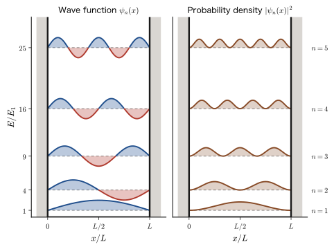
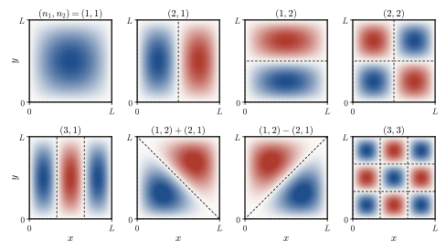
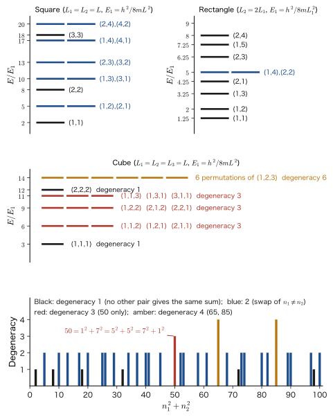
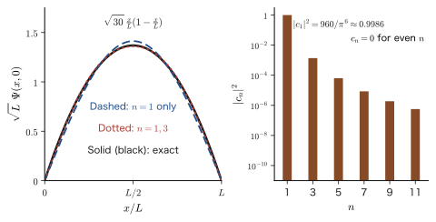
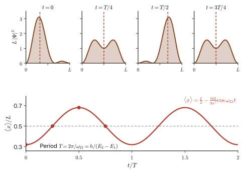
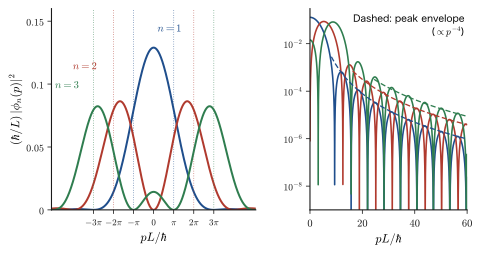
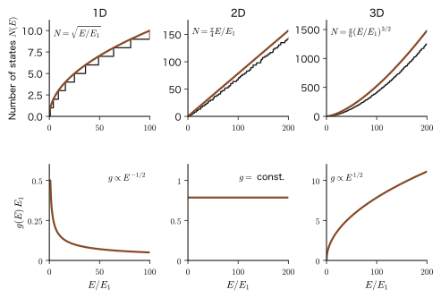
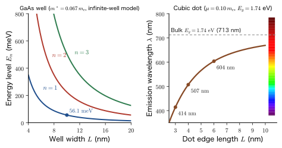

Chapter 10The Infinite Potential Well — Particle in a Box
When a billiard ball is placed on a rail 1 m long and made to travel back and forth between the walls at the left and right ends, the speed of the ball can be given any value we like, and therefore so can its kinetic energy. But if we do the same thing with an electron and make the spacing between the walls about 1 nm, the energies that the electron can take are restricted to discrete values such as $0.376\ \mathrm{eV}$, $1.504\ \mathrm{eV}$, $3.384\ \mathrm{eV}$, …. The energy is “quantized.” The aim of this chapter is to see how this quantization emerges from the Schrödinger equation derived in the previous chapter, in the mathematically simplest situation and without skipping a single line.
The system we take up is a particle moving in a well bounded by infinitely high walls—the “particle in a box.” The equation is $-\dfrac{\hbar^2}{2m}\psi''=E\psi$, which has almost exactly the same form as the equation of simple harmonic motion that you learned in high school physics, and its solutions are $\sin$ and $\cos$. The only difference lies in the boundary conditions. If we impose the condition that the wave function becomes $0$ at the walls at both ends, then, just as for the normal modes of a string of a stringed instrument (AD 03 “Introductory University Physics,” Chapter 12, Section 12.6), only waves for which an integer multiple of half the wavelength fits into the length of the box are allowed. For a string this appears as the phenomenon that “only notes of definite pitch can be produced”; for a particle it appears as the phenomenon that “only definite energies can be taken.” In classical physics, particles and waves were different things, but in quantum mechanics a particle behaves as a wave, so the same mathematics can be used.
This simple problem contains almost all of the principal tools of quantum mechanics: the fact that the energy is quantized by the boundary conditions; normalization and the probability density; the way of writing inner products, orthogonality, and expectation values in Dirac notation (bras and kets), which is introduced for the first time in this book; separation of variables and degeneracy in two and three dimensions; the expectation values of position and momentum and the uncertainty; the construction of the solution of the time-dependent equation as a superposition of stationary states (quantum beats); the momentum representation of the wave function (the Fourier transform); and, finally, the density of states and the Fermi energy, which are the starting point of the electron theory of solids. Moreover, this model explains, only very roughly but as a first step, the color of conjugated molecules, the light emission and infrared absorption of semiconductor quantum wells, and the emission color of quantum dots. We will use it many times as a tool for first understanding the “dependence on size” of the optical properties of materials.
- To solve the Schrödinger equation of the infinite well in two ways—from the boundary conditions by way of a determinant, and by the even/odd (parity) method—and to derive $E_n=n^2h^2/(8mL^2)$ and $\psi_n(x)=\sqrt{2/L}\,\sin(n\pi x/L)$
- To understand the meaning of the Dirac notation $\ket{\psi}$, $\bra{\phi}$, $\braket{\phi}{\psi}$, and to be able to write normalization, orthogonality, and expectation values in this notation
- To solve the two- and three-dimensional boxes by separation of variables, and to explain the origin of degeneracy (different states with the same energy) from both symmetry and number theory
- To evaluate $\langle x\rangle$, $\langle p\rangle$, $\langle T\rangle$, $\langle x^2\rangle$, $\Delta x\,\Delta p$ by direct calculation, and to explain why “the momentum is not zero even though $\langle p\rangle=0$”
- To solve the time-dependent equation by separation of variables, to expand an arbitrary initial state in the form $\Psi=\sum_n c_n e^{-iE_nt/\hbar}\psi_n$, and to calculate quantum beats
- To find the momentum distribution $\phi_n(p)$ by integrating by parts twice, and to derive the density of states that follows from periodic boundary conditions, and the Fermi energy of free electrons, $E_{\mathrm F}=(\hbar^2/2m)(3\pi^2 n_{\mathrm e})^{2/3}$
- To estimate the optical properties of conjugated polyenes, semiconductor quantum wells, and quantum dots from the levels of the particle in a box
Source notes: Yasuhide Mochizuki, “Physics Notes: Quantum Mechanics 2,” pp. 6–7, pp. 12–17.
10.1 The One-Dimensional Infinite Well — From Boundary Conditions to Quantization
10.1.1 Setting up the problem
Suppose an electron (mass $m$) can move only along the $x$ axis, and suppose its motion is independent of time (it is in a stationary state). As we derived in the previous chapter, the spatial part $\psi(x)$ of the wave function then satisfies the time-independent Schrödinger equation
\begin{equation} -\frac{\hbar^2}{2m}\frac{\dd^2\psi}{\dd x^2}+V(x)\,\psi=E\,\psi \label{eq:10-tise} \end{equation}Here $V(x)$ is the potential energy and $E$ is the eigenvalue of the total energy that we want to find. We now consider the following potential.
Definition 10.1: Infinite potential well (particle in a box)
For a positive constant $a$, the potential given by
\begin{equation} V(x)=\begin{cases}0 & (\abs{x}\le a)\\[1mm] \infty & (\abs{x}\gt a)\end{cases} \label{eq:10-V} \end{equation}is called the infinite potential well (also called the infinite square well), and the problem of a particle in it is called the particle in a box problem. The width of the well is $L=2a$. The boundary condition is taken to be $\psi(a)=\psi(-a)=0$.
Notation: The well width is $L$ and the half-width is $a$
In the companion volume “University Mathematics” (AD 02), Chapter 45, the half-width $a$ of the well (width $2a$) is used, and in “Introductory University Physics” (AD 03) the width was written $L$. This book writes the width as $L$ and sets $L=2a$. In this section we use $a$ in the symmetric coordinates in which the parity (even or odd character) of the wave function is easy to see (the origin at the center of the well), and each time we also write the results in terms of $L$. Also, to avoid confusion with the angular frequency $\omega$, this book writes the wavenumber inside the well (the number of waves per $2\pi$) as $k$: $k=\sqrt{2mE}/\hbar$. Furthermore, this book numbers the states of a particle in a box as $n=1,2,3,\dots$ ($n=0$ is not allowed; Section 10.1.4). The harmonic oscillator (Chapter 13) starts from $n=0,1,2,\dots$, so do not confuse the two.
10.1.2 $\psi=0$ outside the well
First consider the region $\abs{x}\gt a$. A classical particle would need infinite kinetic energy to get outside the wall, so when it hits the wall it is bounced back completely and can never exist outside the wall. Hence the particle can exist only in the region $\abs{x}\le a$. Quantum mechanics gives the same conclusion, but restated in the language of wave functions it goes as follows.
Why is $\psi=0$ inside the wall?
Looking at Eq. \eqref{eq:10-tise} for $\abs{x}\gt a$, we see that since $V=\infty$, the term $V\psi$ on the left-hand side becomes infinite. The right-hand side $E\psi$ is finite for a finite energy $E$, so for the equation to hold we must have $\psi=0$.
Let us check this a little more carefully by first making the wall height a finite $V_0$ and then taking the limit $V_0\to\infty$ (we solve this in detail in the next chapter). Inside the wall ($E\lt V_0$), the solution of the equation $\psi''=\kappa^2\psi$, $\kappa=\sqrt{2m(V_0-E)}/\hbar$, decays as $\psi\propto e^{-\kappa\abs{x}}$, and the depth of the penetration is about $1/\kappa$. As $V_0\to\infty$ we have $\kappa\to\infty$, so the penetration depth becomes $0$ and $\psi=0$ inside the wall.
Furthermore, the wave function must be continuous between the outside and the inside of the well (if it were not continuous, $\psi'$ would contain a $\delta$ function and $\psi''$ would contain an even stronger infinite term, like the derivative of a $\delta$ function, and the equation could not be satisfied at places where $V$ is finite). Since $\psi=0$ outside the wall, continuity makes the value at the position of the wall $0$ as well. This is the meaning of the boundary condition $\psi(\pm a)=0$ stated at the beginning. In other words, the boundary condition is not a separately assumed condition; it is a conclusion that follows from “$\psi=0$ inside the wall” and “the continuity of $\psi$.”
Caution: $\psi'$ need not be continuous at the wall
For a potential of finite height, not only $\psi$ but also the derivative $\psi'$ must be continuous (next chapter). For an infinitely high wall, however, we have $\psi'\ne0$ on the inner side of the wall (as we will see in Section 10.2, $\psi_n'(0)=\sqrt{2/L}\,n\pi/L\ne0$), whereas $\psi'=0$ outside the wall. That is, $\psi'$ jumps at the wall. This is not a contradiction. At the position of the wall $V=\infty$, so the right-hand side of the equation $\psi''=\dfrac{2m}{\hbar^2}(V-E)\psi$ takes the form “$\infty\times0$,” and the grounds for demanding the continuity of $\psi'$ are lost. In the limit $V_0\to\infty$ of a wall of finite height, the slope at the wall is $\psi'(a)=-\kappa\,\psi(a)$; here $\kappa\to\infty$ and $\psi(a)\to0$, but the product $\kappa\,\psi(a)$ remains a finite value that is not 0. This is the true nature of the jump in $\psi'$.
10.1.3 The general solution inside the well
Next consider the region $\abs{x}\le a$. Here $V=0$, so Eq. \eqref{eq:10-tise} becomes
\begin{equation} -\frac{\hbar^2}{2m}\frac{\dd^2\psi}{\dd x^2}=E\psi \qquad\text{that is}\qquad \psi''=-\frac{2mE}{\hbar^2}\,\psi \label{eq:10-inside} \end{equation}(Since the interior has only the one variable $x$, we have written the ordinary derivative $\dd/\dd x$ rather than a partial derivative.) Here we assume $E\gt0$ and let
\begin{equation} k\equiv\frac{\sqrt{2mE}}{\hbar}\qquad\left(k^2=\frac{2mE}{\hbar^2}\right) \label{eq:10-k} \end{equation}Then Eq. \eqref{eq:10-inside} becomes the equation $\psi''=-k^2\psi$, which has the same form as the equation of simple harmonic motion in high-school physics. The assumption $E\gt0$ will be checked later (Section 10.1.5). That the solutions of this equation are $\cos kx$ and $\sin kx$ can be confirmed by substituting them directly: $(\cos kx)''=-k^2\cos kx$, $(\sin kx)''=-k^2\sin kx$. Since this is a second-order linear homogeneous differential equation, there are two independent solutions, and the general solution is a linear combination of them (University Mathematics, Chapter 35, Section 35.4):
\begin{equation} \psi(x)=A\cos kx+B\sin kx \label{eq:10-gen} \end{equation}Here $A,B$ are constants determined by the boundary conditions. Rewriting this with Euler's formula, we can also write $\psi=A'e^{ikx}+B'e^{-ikx}$. Since $e^{ikx}$ is a plane wave traveling to the right (momentum $+\hbar k$) and $e^{-ikx}$ is a plane wave traveling to the left (momentum $-\hbar k$), Eq. \eqref{eq:10-gen} expresses the fact that the “wave of a particle repeatedly reflected at the walls” is a standing wave formed by the superposition of a right-moving wave and a left-moving wave (the difference between $e^{ikx}$ and $\cos kx$ was also discussed in Chapter 1).
10.1.4 Boundary conditions and the determinant — the quantization condition
We substitute the boundary conditions into Eq. \eqref{eq:10-gen}. Noting that $\cos$ is an even function ($\cos(-ka)=\cos ka$) and $\sin$ is an odd function ($\sin(-ka)=-\sin ka$), we have
\begin{equation} \begin{cases} \psi(a)=A\cos ka+B\sin ka=0\\ \psi(-a)=A\cos ka-B\sin ka=0 \end{cases} \label{eq:10-bc} \end{equation}which is a system of simultaneous linear equations in the unknowns $A,B$. Written in matrix form, it is
\begin{equation} \begin{bmatrix}\cos ka&\sin ka\\ \cos ka&-\sin ka\end{bmatrix} \begin{bmatrix}A\\B\end{bmatrix}=\begin{bmatrix}0\\0\end{bmatrix} \label{eq:10-mat} \end{equation}(the first row corresponds to $\psi(a)=0$ and the second row to $\psi(-a)=0$).
This homogeneous system of linear equations always has the trivial solution $A=B=0$. But this is $\psi\equiv0$, that is, the meaningless solution “the particle is nowhere to be found.” For the particle to exist, there must be a nontrivial solution in which $A,B$ are not both $0$. A necessary and sufficient condition for a homogeneous system of linear equations $M\bm{v}=\bm{0}$ to have a nontrivial solution is that the determinant of the coefficient matrix be $0$ (University Mathematics, Chapter 9, Section 9.3). We therefore obtain
\begin{equation} \begin{vmatrix}\cos ka&\sin ka\\ \cos ka&-\sin ka\end{vmatrix} =\cos ka\cdot(-\sin ka)-\sin ka\cdot\cos ka=-2\sin ka\cos ka=-\sin 2ka=0 \label{eq:10-det} \end{equation}Along the way, we used the double-angle formula $\sin2\theta=2\sin\theta\cos\theta$ in reverse with $\theta=ka$. Since $\sin\theta=0$ only when $\theta$ is an integer multiple of $\pi$,
\begin{equation} 2ka=n\pi\qquad(n=1,2,3,\dots) \label{eq:10-quant} \end{equation}is the quantization condition. The case $n=0$ corresponds to $k=0$ ($E=0$). In that case Eq. \eqref{eq:10-inside} becomes $\psi''=0$, whose general solution is the linear function $\psi=A+Bx$. The boundary condition $\psi(\pm a)=A\pm Ba=0$ gives $A=B=0$, that is, $\psi\equiv0$, so $n=0$ is excluded. Also, since $k=\sqrt{2mE}/\hbar$ was defined as a value greater than or equal to $0$, we need not consider negative integers $n$ (even if we formally replace $k\to-k$, since $\cos(-kx)=\cos kx$ and $\sin(-kx)=-\sin kx$, this merely amounts to reading the coefficient as $B\to-B$ and gives the same state). Therefore we need only consider $n=1,2,3,\ldots$.
Alternative solution: Solving by adding and subtracting (the even/odd method)
Even without determinants, adding and subtracting the two equations in Eq. \eqref{eq:10-bc} gives
$$ \psi(a)+\psi(-a)=2A\cos ka=0,\qquad \psi(a)-\psi(-a)=2B\sin ka=0 $$so that $A$ and $B$ separate into different equations (the even part $A\cos kx$ and the odd part $B\sin kx$ must each satisfy the boundary conditions independently). Therefore, if $A\ne0$ then $\cos ka=0$, and if $B\ne0$ then $\sin ka=0$. Since $\cos ka=0$ and $\sin ka=0$ cannot hold at the same time ($\cos^2+\sin^2=1$), one of $A$ and $B$ must be $0$. When $\cos ka=0$, we have $ka=\dfrac{\pi}{2},\dfrac{3\pi}{2},\dots$, that is, $2ka=n\pi$ ($n$ is odd). When $\sin ka=0$, we have $ka=\pi,2\pi,\dots$, that is, $2ka=n\pi$ ($n$ is even). Both are contained in Eq. \eqref{eq:10-quant}, with odd $n$ corresponding to the $\cos$ type (even functions) and even $n$ to the $\sin$ type (odd functions). The determinant method can be used as it stands for general problems (such as the finite well in the next chapter, where there are four boundary conditions), whereas the even/odd method is a quick way to solve problems with a symmetric potential.
10.1.5 Quantization of energy
Substitute Eq. \eqref{eq:10-k} into Eq. \eqref{eq:10-quant}. Squaring both sides of $2ka=\dfrac{2a\sqrt{2mE}}{\hbar}=n\pi$, we obtain
$$ \frac{4a^2\cdot 2mE}{\hbar^2}=n^2\pi^2 \qquad\therefore\quad E=\frac{(\pi\hbar)^2}{8ma^2}\,n^2\qquad(n=1,2,3,\dots) $$Substituting $a=L/2$ and using $\hbar=h/2\pi$ (that is, $\pi^2\hbar^2=h^2/4$), we arrive at the following result.
Theorem 10.1: Energy levels of a particle in a box
The energy eigenvalues of a particle of mass $m$ in a one-dimensional infinite well of width $L$ are
\begin{equation} E_n=\frac{n^2\pi^2\hbar^2}{2mL^2}=\frac{n^2h^2}{8mL^2}\qquad(n=1,2,3,\dots) \label{eq:10-En} \end{equation}The number $n$ is called the quantum number ($n=0$ is not allowed). The wavenumber and the magnitude of the momentum for this state are
\begin{equation} k_n=\frac{n\pi}{L},\qquad p_n=\hbar k_n=\frac{n\pi\hbar}{L}=\frac{nh}{2L} \label{eq:10-kn} \end{equation}(Using $a=L/2$, we can also write $E_n=\pi^2\hbar^2n^2/(8ma^2)$.)
The reason the energy takes discrete values appears clearly here. The condition that “the wave becomes $0$ at both ends of the well” restricts the wavelength to $\lambda=2\pi/k_n=2L/n$, and hence restricts the momentum to $p=h/\lambda=nh/2L$. Only waves with $L=n\cdot\lambda/2$, that is, waves for which an integer multiple of the half-wavelength fits into the width of the well, are allowed. This is the same condition as for the normal modes of a string fixed at both ends, and we can also confirm that the kinetic energy $p^2/2m=(nh/2L)^2/2m$ agrees with Eq. \eqref{eq:10-En}.
Dimension check
The units of $\hbar^2/(mL^2)$ are $(\mathrm{J\,s})^2/(\mathrm{kg\,m^2})=\mathrm{J^2\,s^2}/(\mathrm{kg\,m^2})$. Using $\mathrm{J}=\mathrm{kg\,m^2\,s^{-2}}$ here, we get $\mathrm{J^2\,s^2}/(\mathrm{kg\,m^2})=\mathrm{J}\cdot(\mathrm{kg\,m^2\,s^{-2}})\mathrm{s^2}/(\mathrm{kg\,m^2})=\mathrm{J}$, which is the dimension of energy. Also, since $E_n\propto1/L^2$, the narrower the box, the higher the levels and the wider their spacing.
Question: Are there no solutions with $E\le0$?
In Section 10.1.3 we assumed $E\gt0$. Let us check this. Multiply Eq. \eqref{eq:10-inside} from the left by $\psi^*$, integrate from $-a$ to $a$, and integrate by parts. By the boundary condition $\psi(\pm a)=0$ the boundary term vanishes, and we obtain
$$ E\int_{-a}^{a}\abs{\psi}^2\dd x=-\frac{\hbar^2}{2m}\int_{-a}^{a}\psi^*\psi''\dd x=\frac{\hbar^2}{2m}\int_{-a}^{a}\abs{\psi'}^2\dd x\ \ge\ 0 $$Since $\int\abs{\psi}^2\dd x\gt0$, it follows that $E\ge0$. Moreover, if $E=0$ then $\psi'\equiv0$, that is, $\psi$ is a constant, and the boundary condition would force $\psi\equiv0$. Hence $E\gt0$, and even in the lowest level the kinetic energy does not become $0$. This is a consequence of the uncertainty principle: when the particle is confined in a box ($\Delta x$ becomes finite), the momentum cannot become exactly $0$ ($\Delta p\ne0$) (Section 10.4).
10.1.6 Application: The $\pi$ electrons of hexatriene resemble a “particle in a box”
Let us look at an example in which this simple model can be applied to a real substance. Hexatriene $\mathrm{CH_2{=}CH{-}CH{=}CH{-}CH{=}CH_2}$ is a molecule (a conjugated polyene) in which six carbon atoms are lined up in a row, with double bonds and single bonds alternating. The $\pi$ electrons of each carbon atom (the electrons in the $2p$ orbitals that extend perpendicular to the molecular plane) are not bound to any particular carbon atom and can move, spread out over the whole chain. The $\pi$ electrons cannot go beyond the two ends of the chain. In other words, the region in which the $\pi$ electrons can exist resembles a one-dimensional well with walls at both ends (Figure 10.2).
An electron has two internal states called spin (up $\uparrow$ and down $\downarrow$) (Chapter 23). By the Pauli exclusion principle (Chapter 33), at most two electrons, with different spin directions, can be put into the same orbital state (the same $n$). Therefore, the six $\pi$ electrons enter the levels $n=1,2,3$, two in each, in order starting from the level of lowest energy.
Illustration 10.1: Ground level of hexatriene
Regarding the region in which the $\pi$ electrons can exist as an infinite well of width $L=0.727\ \mathrm{nm}$, find the lowest level $E_1$ of an electron ($m=m_{\mathrm e}$). Use $h=6.626\times10^{-34}\ \mathrm{J\,s}$ and $m_{\mathrm e}=9.109\times10^{-31}\ \mathrm{kg}$.
Solution. Setting $n=1$ in Eq. \eqref{eq:10-En}, we have $E_1=\dfrac{\pi^2\hbar^2}{2m_{\mathrm e}L^2}\cdot1^2=\dfrac{h^2}{8m_{\mathrm e}L^2}$. The numerator is $h^2=(6.626\times10^{-34})^2=4.390\times10^{-67}\ \mathrm{J^2\,s^2}$. For the denominator, using $L^2=(0.727\times10^{-9}\ \mathrm{m})^2=5.285\times10^{-19}\ \mathrm{m^2}$, we get $8m_{\mathrm e}L^2=8\times9.109\times10^{-31}\times5.285\times10^{-19}=3.851\times10^{-48}\ \mathrm{kg\,m^2}$. Therefore
$$ E_1=\frac{4.390\times10^{-67}}{3.851\times10^{-48}}\ \mathrm{J}=1.140\times10^{-19}\ \mathrm{J}=\frac{1.1399\times10^{-19}}{1.602\times10^{-19}}\ \mathrm{eV}=0.7115\ \mathrm{eV} $$(We converted to eV using the intermediate value $1.1399\times10^{-19}\ \mathrm{J}$ of the division.) Since the higher levels are $E_n=n^2E_1$, we obtain $E_2=2.85\ \mathrm{eV}$, $E_3=6.40\ \mathrm{eV}$, and $E_4=11.4\ \mathrm{eV}$. (The chain length $0.727\ \mathrm{nm}$ is the effective value $d\approx0.145\ \mathrm{nm}$ for the spacing between adjacent carbon atoms, taken for five bonds. The actual bond lengths are about $0.134\ \mathrm{nm}$ for C=C and about $0.146\ \mathrm{nm}$ for C−C, and the sum over the five bonds is about $0.69\ \mathrm{nm}$. It is enough to regard this length as a parameter of the model: a length that includes the amount by which the $\pi$ electrons extend slightly beyond the carbon atoms at both ends.)
Example 10.1: Levels and spacings of an electron in a box
For an electron confined in an infinite well of width $L=0.5\ \mathrm{nm}$: (1) Find the coefficient that expresses $E_n$ in $\mathrm{eV}$ for a general $L$. (2) Find the levels for $n=1,2,3$ and the spacings between adjacent levels.
Solution. (1) We first compute $h^2/(8m_{\mathrm e})$, which appears in Eq. \eqref{eq:10-En}. With $h=6.626\,070\,15\times10^{-34}\ \mathrm{J\,s}$ and $m_{\mathrm e}=9.109\,383\,7\times10^{-31}\ \mathrm{kg}$, we have
$$ \frac{h^2}{8m_{\mathrm e}}=\frac{(6.626\,070\times10^{-34})^2}{8\times9.109\,384\times10^{-31}}=6.0247\times10^{-38}\ \mathrm{J\,m^2} $$Using $1\ \mathrm{eV}=1.602\,177\times10^{-19}\ \mathrm{J}$ and $1\ \mathrm{nm^2}=10^{-18}\ \mathrm{m^2}$, we obtain $\dfrac{6.0247\times10^{-38}}{1.602\,177\times10^{-19}\times10^{-18}}=0.3760\ \mathrm{eV\,nm^2}$. Hence
$$ E_n=0.3760\,\frac{n^2}{(L/\mathrm{nm})^2}\ \mathrm{eV} $$(For $L=0.727\ \mathrm{nm}$ we get $E_1=0.3760/0.5285=0.7115\ \mathrm{eV}$, which agrees with Illustration 10.1.) (2) For $L=0.5\ \mathrm{nm}$, $E_n=0.3760\,n^2/0.25=1.504\,n^2\ \mathrm{eV}$, so
$$ E_1=1.504\ \mathrm{eV},\quad E_2=6.016\ \mathrm{eV},\quad E_3=13.54\ \mathrm{eV} $$The spacings are $E_2-E_1=3E_1=4.51\ \mathrm{eV}$ and $E_3-E_2=5E_1=7.52\ \mathrm{eV}$. In general $E_{n+1}-E_n=(2n+1)E_1$, so the higher the level, the wider the spacing. These spacings are of almost the same magnitude as the spacings of atomic and molecular levels, a few $\mathrm{eV}$, so we see that confinement on the scale of a nanometer produces the quantum effects of the atomic world.
Example 10.2: A baseball in a 1 m box (the classical limit)
A baseball of mass $0.145\ \mathrm{kg}$ is placed in a box of width $L=1\ \mathrm{m}$ and made to move back and forth at a speed of $1\ \mathrm{m/s}$. (1) Find the lowest level $E_1$. (2) Find the quantum number $n$ of this ball and the ratio $(E_{n+1}-E_n)/E_n$ of the spacing between adjacent levels to the energy of the level.
Solution. (1) Setting $n=1$ in Eq. \eqref{eq:10-En}: $E_1=\dfrac{h^2}{8mL^2}=\dfrac{(6.626\times10^{-34})^2}{8\times0.145\times1^2}=\dfrac{4.390\times10^{-67}}{1.16}=3.78\times10^{-67}\ \mathrm{J}$. (2) The kinetic energy is $E=\tfrac12mv^2=\tfrac12\times0.145\times1^2=0.0725\ \mathrm{J}$. From $E=n^2E_1$,
$$ n=\sqrt{\frac{E}{E_1}}=\sqrt{\frac{0.0725}{3.78\times10^{-67}}}=\sqrt{1.92\times10^{65}}=4.4\times10^{32} $$Since the spacing between adjacent levels is $E_{n+1}-E_n=(2n+1)E_1$, we have $\dfrac{E_{n+1}-E_n}{E_n}=\dfrac{2n+1}{n^2}\approx\dfrac{2}{n}=4.6\times10^{-33}$. The spacing of the levels is only $10^{-33}$ times the level energy itself, so the discreteness of the levels cannot be seen in any measurement. The energy looks practically continuous. This is why classical mechanics holds (the correspondence principle). In the limit of a very large quantum number $n$, the results of quantum mechanics connect continuously to those of classical mechanics.
10.1.7 The wave function: cases by whether $n$ is even or odd
From Eq. \eqref{eq:10-quant}, $k=\dfrac{n\pi}{2a}=\dfrac{n\pi}{L}$. Substituting the energy result into $k=\sqrt{2mE}/\hbar$ as a check, we also get $k=\dfrac{1}{\hbar}\sqrt{2m\cdot\dfrac{(\pi\hbar)^2}{8ma^2}\,n^2}=\dfrac{1}{\hbar}\cdot\dfrac{\pi\hbar\,n}{2a}=\dfrac{n\pi}{2a}$, which agrees. Substituting this back into Eq. \eqref{eq:10-gen}, the general solution is
$$ \psi(x)=A\cos\frac{n\pi}{2a}x+B\sin\frac{n\pi}{2a}x\qquad(\abs{x}\le a) $$Next, we use the boundary condition $\psi(a)=0$ to determine the relation between the constants $A,B$. We have $\psi(a)=A\cos\dfrac{n\pi}{2}+B\sin\dfrac{n\pi}{2}=0$ (using $\psi(-a)=0$ instead gives $A\cos\dfrac{n\pi}{2}-B\sin\dfrac{n\pi}{2}=0$, and the conclusions below are the same). The values of $\cos\dfrac{n\pi}{2}$ and $\sin\dfrac{n\pi}{2}$ depend on whether $n$ is even or odd, as follows.
| $n$ | 1 | 2 | 3 | 4 | 5 | 6 |
|---|---|---|---|---|---|---|
| $\cos\dfrac{n\pi}{2}$ | 0 | $-1$ | 0 | 1 | 0 | $-1$ |
| $\sin\dfrac{n\pi}{2}$ | 1 | 0 | $-1$ | 0 | 1 | 0 |
[i] When $n$ is odd ($n=1,3,5,\dots$). We have $\cos\dfrac{n\pi}{2}=0$ and $\sin\dfrac{n\pi}{2}=\pm1\ne0$. The boundary condition becomes $B\sin\dfrac{n\pi}{2}=0$, so $B=0$. Therefore
$$ \psi(x)=A\cos\frac{n\pi}{2a}x\qquad(n=1,3,5,\dots) $$[ii] When $n$ is even ($n=2,4,6,\dots$). We have $\sin\dfrac{n\pi}{2}=0$ and $\cos\dfrac{n\pi}{2}=\pm1\ne0$. The boundary condition becomes $A\cos\dfrac{n\pi}{2}=0$, so $A=0$. Therefore
$$ \psi(x)=B\sin\frac{n\pi}{2a}x\qquad(n=2,4,6,\dots) $$The wave function for odd $n$ is an even function about $x=0$ ($\cos$), and that for even $n$ is an odd function ($\sin$). This even or odd character reflects the fact that the well is symmetric about $x=0$ ($V(-x)=V(x)$), and is called the parity of the wave function (Figure 10.3). The remaining constants $A$ and $B$ are determined by the normalization in the next section.
10.2 Normalization and Dirac Notation — Inner Product, Orthogonality, and Properties of the Eigenfunctions
10.2.1 Determining the constants $A$ and $B$: normalization
The Schrödinger equation is linear and homogeneous in $\psi$, so if $\psi$ is a solution, then $2\psi$ and $-\psi$ are also solutions; the equation and the boundary conditions alone therefore do not fix the magnitudes of the constants $A$ and $B$. What fixes the magnitude is the Born interpretation. As we saw in the preceding chapters, $\abs{\psi(x)}^2$ is the probability density of finding the particle near position $x$, and $\abs{\psi(x)}^2\dd x$ is the probability of finding the particle between $x$ and $x+\dd x$. Therefore the probability that the particle is somewhere on the $x$ axis must be $1$:
\begin{equation} \int_{-\infty}^{\infty}\abs{\psi(x)}^2\dd x=1 \label{eq:10-norm} \end{equation}This is called the normalization condition. Note that the probability density is $\abs{\psi}^2$, not $\psi$ itself. In general $\psi$ takes complex values and has no meaning as a probability.
10.2.2 Introducing Dirac notation
The integral on the left-hand side of Eq. \eqref{eq:10-norm} will appear many times from now on, so we introduce a notation for writing it concisely. Instead of writing the wave function as a “function of $x$,” as in $\psi(x)$, there is a way of writing that uses an abstract symbol $\ket{\psi}$ standing for the state itself; it is called Dirac notation.
Definition 10.2: Ket, Bra, and Inner Product (Dirac Notation)
(1) We write a quantum state as a ket $\ket{\psi}$. The wave function $\psi(x)$, expressed as a function of position $x$, is the “$x$ representation” of this ket (that $\psi(x)$ is the inner product of $\ket{\psi}$ with the position eigenket $\ket{x}$ will be explained in Section 10.6.1).
(2) For a ket $\ket{\psi}$ we consider the bra $\bra{\psi}$ corresponding to its complex conjugate. In terms of wave functions, it corresponds to $\psi^*(x)$.
(3) The inner product of two states $\ket{\psi}$ and $\ket{\phi}$ is defined by placing the bra and the ket side by side:
(In two and three dimensions, replace the integral by $\int\dd x\dd y$ and $\int\dd^3r$, respectively.)
(4) The quantity with an operator $\hat{A}$ sandwiched in between is written as
In particular, the expectation value is $\expval{\hat{A}}=\mel{\psi}{\hat{A}}{\psi}$.
(5) Placing the ket and the bra in the order opposite to that of the inner product, $\ket{\phi}\bra{\psi}$ is not a number but an operator. Acting on a ket $\ket{\chi}$, it gives $\bigl(\ket{\phi}\bra{\psi}\bigr)\ket{\chi}=\ket{\phi}\,\braket{\psi}{\chi}$, that is, $\braket{\psi}{\chi}$ times the ket $\ket{\phi}$ (used in Section 10.5.2).
The names “bra” and “ket” come from the English word bracket split into two halves, $\langle\ |\ \rangle$: the left half $\langle\phi|$ (bra) and the right half $|\psi\rangle$ (ket). Using this notation, the normalization condition, Eq. \eqref{eq:10-norm}, can be written as follows.
\begin{equation} \braket{\psi}{\psi}=\int_{-\infty}^{\infty}\psi^*(x)\,\psi(x)\dd x=\int_{-\infty}^{\infty}\abs{\psi(x)}^2\dd x=1 \label{eq:10-norm-bk} \end{equation}This means that the inner product of $\ket{\psi}$ with itself is $1$; that is, the “length” (norm) of the state $\ket{\psi}$ is $1$. The inner product has the following properties, each of which can be checked in one line from the definition, Eq. \eqref{eq:10-inner}.
- Complex conjugate: $\braket{\phi}{\psi}^*=\braket{\psi}{\phi}$. Indeed, $\braket{\phi}{\psi}^*=\Bigl(\displaystyle\int\phi^*\psi\dd x\Bigr)^*=\int\phi\,\psi^*\dd x=\braket{\psi}{\phi}$ (the complex conjugate of an integral is the integral of the complex conjugate of the integrand).
- Linearity: $\bra{\phi}\bigl(c_1\ket{\psi_1}+c_2\ket{\psi_2}\bigr)=c_1\braket{\phi}{\psi_1}+c_2\braket{\phi}{\psi_2}$ (linear in the ket). For the bra, the bra corresponding to $c_1\ket{\phi_1}+c_2\ket{\phi_2}$ is $c_1^*\bra{\phi_1}+c_2^*\bra{\phi_2}$ (the complex conjugates appear). The former follows from the linearity of the integral, $\int\phi^*(c_1\psi_1+c_2\psi_2)\dd x=c_1\int\phi^*\psi_1\dd x+c_2\int\phi^*\psi_2\dd x$, and the latter from $(c_1\phi_1+c_2\phi_2)^*=c_1^*\phi_1^*+c_2^*\phi_2^*$.
- Positivity: $\braket{\psi}{\psi}=\displaystyle\int\abs{\psi}^2\dd x\ge0$. This is because the integrand $\abs{\psi}^2$ is greater than or equal to $0$ everywhere. Equality holds only when $\abs{\psi}^2\equiv0$, that is, $\psi\equiv0$.
| Quantity | Written as an integral | Dirac notation |
|---|---|---|
| Normalization | $\displaystyle\int\psi^*\psi\dd x=1$ | $\braket{\psi}{\psi}=1$ |
| Orthonormality | $\displaystyle\int\psi_m^*\psi_n\dd x=\delta_{mn}$ | $\braket{m}{n}=\delta_{mn}$ |
| Expectation value | $\displaystyle\int\psi^*\,\hat{A}\psi\dd x$ | $\mel{\psi}{\hat{A}}{\psi}=\expval{\hat{A}}$ |
| Matrix element | $\displaystyle\int\psi_m^*\,\hat{A}\psi_n\dd x$ | $\mel{m}{\hat{A}}{n}$ |
| Expansion coefficient | $c_n=\displaystyle\int\psi_n^*\Psi\dd x$ | $c_n=\braket{n}{\Psi}$ |
| Expansion | $\Psi=\displaystyle\sum_nc_n\psi_n$ | $\ket{\Psi}=\displaystyle\sum_nc_n\ket{n}$ |
In Table 10.2, $\ket{n}$ is the ket corresponding to the eigenfunction $\psi_n$ (Section 10.2.5). We see that expressions that become long when written as integrals can be written compactly in the form of a bra and a ket “sandwiching” what lies between them.
Math Tool: Inner product of functions and inner product of vectors
Eq. \eqref{eq:10-inner} is obtained from the inner product $\sum_i u_i^*v_i$ of two numerical vectors $\bm{u}=(u_1,\dots,u_N)$ and $\bm{v}=(v_1,\dots,v_N)$ by replacing the sum with an integral. We regard the function $\psi(x)$ as a vector with infinitely many components, “the value at each point $x$.” The inner product and norm of real functions were treated in AD 02, Chapter 27 (Section 27.2, Inner Products and Norms of Functions). In quantum mechanics the wave functions are complex, so the only difference is that the function on the left carries a complex conjugate. Writing the inner product as the “product of a bra and a ket,” $\braket{\phi}{\psi}$, is Dirac notation.
Caution: $\braket{\phi}{\psi}$ is just a number, not a function of $x$
$\braket{\phi}{\psi}$ is a number (in general complex) obtained after integrating over $x$; it is not a function of $x$. From this chapter on, we write $\int\phi^*\psi\dd x$ as $\braket{\phi}{\psi}$ and $\int\phi^*\hat{A}\psi\dd x$ as $\mel{\phi}{\hat{A}}{\psi}$. Whenever an integral appears, please keep in mind that it is a “number” obtained by integrating over $x$.
10.2.3 Determining the normalization constants
With this preparation, we determine the constants in the wave functions of Section 10.1.7. Since $\psi=0$ outside the well, the normalization integral, Eq. \eqref{eq:10-norm}, reduces to an integral over the inside of the well, $[-a,a]$, only.
Derivation: Normalization constants
[i] Odd $n$ ($\psi=A\cos\dfrac{n\pi}{2a}x$). Taking $A$ to be real, we use $\cos^2\theta=\dfrac{1+\cos2\theta}{2}$ (the half-angle formula in High School Mathematics, Chapter 5, Section 5.3) with $\theta=\dfrac{n\pi}{2a}x$ and $2\theta=\dfrac{n\pi}{a}x$, to obtain
$$ \braket{\psi}{\psi}=A^2\int_{-a}^{a}\cos^2\frac{n\pi x}{2a}\dd x=A^2\int_{-a}^{a}\frac{1+\cos\frac{n\pi}{a}x}{2}\dd x =\frac{A^2}{2}\left[x+\frac{a}{n\pi}\sin\frac{n\pi}{a}x\right]_{-a}^{a} $$Since $\sin n\pi=0$ and $\sin(-n\pi)=0$, the expression in the brackets equals $a+0-(-a)-0=2a$. Hence
$$ \braket{\psi}{\psi}=\frac{A^2}{2}\cdot2a=aA^2=1\qquad\therefore\ A=\frac{1}{\sqrt{a}} $$(Multiplying $A$ by a phase factor such as $e^{i\alpha}$ does not change the normalization, but the overall phase does not affect physical results, so we take $A$ to be a positive real number.)
[ii] Even $n$ ($\psi=B\sin\dfrac{n\pi}{2a}x$). Similarly, using $\sin^2\theta=\dfrac{1-\cos2\theta}{2}$, we have
$$ \braket{\psi}{\psi}=B^2\int_{-a}^{a}\frac{1-\cos\frac{n\pi}{a}x}{2}\dd x=\frac{B^2}{2}\left[x-\frac{a}{n\pi}\sin\frac{n\pi}{a}x\right]_{-a}^{a}=\frac{B^2}{2}\cdot2a=aB^2=1 $$and we obtain $B=1/\sqrt{a}$.
∎
To summarize, in coordinates with the origin at the center of the well, the normalized wave functions are as follows.
\begin{equation} \psi_n(x)=\begin{cases} \dfrac{1}{\sqrt{a}}\cos\dfrac{n\pi}{2a}x & (n=1,3,5,\dots)\\[3mm] \dfrac{1}{\sqrt{a}}\sin\dfrac{n\pi}{2a}x & (n=2,4,6,\dots) \end{cases}\qquad(\abs{x}\le a),\qquad \psi_n(x)=0\ \ (\abs{x}\gt a) \label{eq:10-psi-sym} \end{equation}The coefficient is $1/\sqrt{a}=\sqrt{2/L}$. The odd and even cases can also be combined into a single formula; we do so in the next subsection.
10.2.4 Choosing the coordinates and combining the cases into a single formula
We shift the origin of the coordinates to the left wall and work with $x'=x+a\in[0,L]$ ($L=2a$) (Figure 10.1(b)). The walls are then at $x'=0$ and $x'=L$, and the boundary conditions become $\psi(0)=\psi(L)=0$. In these coordinates, the solution follows in one line from the boundary conditions alone.
Derivation: Solution in the coordinates $[0,L]$
The general solution inside the well, $0\le x\le L$ (from here on we simply write $x$ for $x'$), is $\psi=A\cos kx+B\sin kx$, the same as in Eq. \eqref{eq:10-gen}. From $\psi(0)=A=0$ we get $\psi=B\sin kx$. Since $\psi(L)=B\sin kL=0$ and $B\ne0$, we have $\sin kL=0$, that is,
$$ kL=n\pi\qquad\therefore\ k=\frac{n\pi}{L}\ ,\quad E=\frac{\hbar^2k^2}{2m}=\frac{n^2\pi^2\hbar^2}{2mL^2}\quad(n=1,2,\dots) $$which agrees with Eq. \eqref{eq:10-En}. For normalization, $\displaystyle\int_0^L B^2\sin^2\frac{n\pi x}{L}\dd x=B^2\int_0^L\frac{1-\cos\frac{2n\pi x}{L}}{2}\dd x=B^2\Bigl[\frac{x}{2}-\frac{L}{4n\pi}\sin\frac{2n\pi x}{L}\Bigr]_0^L=\frac{B^2L}{2}=1$ gives $B=\sqrt{2/L}$.
∎
Theorem 10.2: Eigenfunctions of a particle in a box (normalized)
The eigenfunctions of the infinite well of width $L$ with walls at $x=0$ and $x=L$ are
\begin{equation} \psi_n(x)=\sqrt{\frac{2}{L}}\,\sin\frac{n\pi x}{L}\quad(0\le x\le L),\qquad E_n=\frac{n^2h^2}{8mL^2}=\frac{n^2\pi^2\hbar^2}{2mL^2}\qquad(n=1,2,3,\dots) \label{eq:10-psi} \end{equation}(outside the well $\psi_n=0$). The function $\psi_n$ has $n-1$ nodes (interior points where $\psi_n=0$, namely $x=jL/n$, $j=1,\dots,n-1$).
Example 10.3: A translation of the coordinate gives the same state
Show that the function obtained by setting $x=x'-a$ in Eq. \eqref{eq:10-psi-sym} agrees with $\psi_n(x')$ of Eq. \eqref{eq:10-psi} except for the sign.
Solution. We have $\dfrac{n\pi}{2a}x=\dfrac{n\pi}{2a}(x'-a)=\dfrac{n\pi x'}{L}-\dfrac{n\pi}{2}$ ($L=2a$). Let $\theta=\dfrac{n\pi x'}{L}$.
For odd $n$, $\cos\left(\theta-\dfrac{n\pi}{2}\right)=\cos\theta\cos\dfrac{n\pi}{2}+\sin\theta\sin\dfrac{n\pi}{2}=\sin\theta\cdot\sin\dfrac{n\pi}{2}$ (we used $\cos\dfrac{n\pi}{2}=0$). Since $\sin\dfrac{n\pi}{2}=(-1)^{(n-1)/2}$, we obtain $\psi_n=\dfrac{(-1)^{(n-1)/2}}{\sqrt{a}}\sin\dfrac{n\pi x'}{L}$.
For even $n$, $\sin\left(\theta-\dfrac{n\pi}{2}\right)=\sin\theta\cos\dfrac{n\pi}{2}-\cos\theta\sin\dfrac{n\pi}{2}=\sin\theta\cdot\cos\dfrac{n\pi}{2}$ ($\sin\dfrac{n\pi}{2}=0$). Since $\cos\dfrac{n\pi}{2}=(-1)^{n/2}$, we obtain $\psi_n=\dfrac{(-1)^{n/2}}{\sqrt{a}}\sin\dfrac{n\pi x'}{L}$.
In either case the function is $\pm\dfrac{1}{\sqrt{a}}\sin\dfrac{n\pi x'}{L}$, and since $1/\sqrt{a}=\sqrt{2/L}$, it agrees with Eq. \eqref{eq:10-psi} except for the sign. The sign is a constant multiplying the whole function (a special case of the phase $e^{i\alpha}$) and does not affect physical results ($\abs{\psi}^2$ and expectation values). The energy is also the same: $E_n=\pi^2\hbar^2n^2/(8ma^2)=n^2\pi^2\hbar^2/(2mL^2)$.
10.2.5 Properties of the eigenfunctions

The eigenfunctions of Eq. \eqref{eq:10-psi} have the following important properties.
- Number of nodes and curvature: $\psi_n$ has $n-1$ nodes in its interior. The more nodes there are, the shorter the wavelength and the larger the curvature of the wave function ($\abs{\psi''}$). The kinetic energy is the integral of $\dfrac{\hbar^2}{2m}\abs{\psi'}^2$ (Section 10.1.5), so the more nodes there are, the higher the energy.
- Parity: With respect to the center of the well, $x=L/2$, we have $\psi_n(L-x)=(-1)^{n+1}\psi_n(x)$. For odd values of $n$ the function is even, and for even values it is odd.
- Classical limit: $\abs{\psi_n}^2=\dfrac{2}{L}\sin^2\dfrac{n\pi x}{L}$ oscillates very rapidly when $n$ is large. Averaging over the rapid oscillation gives $\dfrac{1}{L}$, which corresponds to the fact that a classical particle moving back and forth between the walls at constant speed is found with equal probability at every place in the well. On the other hand, for $n=1$ (the ground state), the probability of finding the particle at the center is much larger than at the two ends. This is a distribution that never appears in classical physics.
Theorem 10.3: Orthogonality and normalization of the eigenfunctions (orthonormality)
If $m,n$ are positive integers, then
\begin{equation} \braket{\psi_m}{\psi_n}=\int_0^L\psi_m(x)\,\psi_n(x)\dd x=\delta_{mn}=\begin{cases}1&(m=n)\\0&(m\ne n)\end{cases} \label{eq:10-orth} \end{equation}where $\delta_{mn}$ is the Kronecker delta.
Proof
For $m=n$ this is just the normalization. For $m\ne n$, by the product-to-sum formula $\sin\alpha\sin\beta=\dfrac12\bigl[\cos(\alpha-\beta)-\cos(\alpha+\beta)\bigr]$ (High School Mathematics, Chapter 5, Section 5.5), we have
$$ \braket{\psi_m}{\psi_n}=\frac{2}{L}\int_0^L\sin\frac{m\pi x}{L}\sin\frac{n\pi x}{L}\dd x =\frac{1}{L}\int_0^L\left[\cos\frac{(m-n)\pi x}{L}-\cos\frac{(m+n)\pi x}{L}\right]\dd x $$ $$ =\frac{1}{L}\left[\frac{L}{(m-n)\pi}\sin\frac{(m-n)\pi x}{L}-\frac{L}{(m+n)\pi}\sin\frac{(m+n)\pi x}{L}\right]_0^L=0 $$The last equality holds because $m-n$ and $m+n$ are integers other than $0$, so $\sin$ is $0$ at both $x=L$ and $x=0$.
∎
Orthogonality is not an accident. Two eigenstates with different energies are eigenvectors of the Hermitian operator $\hat{H}$, and are therefore necessarily orthogonal (previous chapter). Here we confirmed it directly by integrating $\sin$. The fact that the eigenfunctions are “mutually orthogonal vectors of length 1” plays a decisive role when we express an arbitrary function as a linear combination of the $\psi_n$ (Section 10.5). Incidentally, in Dirac notation, the ket corresponding to $\psi_n$ is often simply written $\ket{n}$. Then Eq. \eqref{eq:10-orth} reads $\braket{m}{n}=\delta_{mn}$.
Example 10.4: The matrix element $\mel{\psi_1}{\hat{x}}{\psi_2}$ and the overlap $\braket{\psi_1}{\psi_2}$
For a well of width $L$, find (1) $\braket{\psi_1}{\psi_2}$ and (2) $\mel{\psi_1}{\hat{x}}{\psi_2}=\displaystyle\int_0^L\psi_1(x)\,x\,\psi_2(x)\dd x$. (Part (2) will be used for the quantum beats in Section 10.5.)
Solution. (1) By the orthogonality in Eq. \eqref{eq:10-orth}, $\braket{\psi_1}{\psi_2}=0$.
(2) $\mel{\psi_1}{\hat{x}}{\psi_2}=\dfrac{2}{L}\displaystyle\int_0^Lx\sin\frac{\pi x}{L}\sin\frac{2\pi x}{L}\dd x$. By the product-to-sum formula, $\sin\dfrac{\pi x}{L}\sin\dfrac{2\pi x}{L}=\dfrac12\left[\cos\dfrac{\pi x}{L}-\cos\dfrac{3\pi x}{L}\right]$, so, letting $q_j=j\pi/L$, we need $I_j\equiv\int_0^Lx\cos q_jx\dd x$. By integration by parts,
$$ I_j=\left[\frac{x\sin q_jx}{q_j}\right]_0^L-\int_0^L\frac{\sin q_jx}{q_j}\dd x=0+\left[\frac{\cos q_jx}{q_j^2}\right]_0^L=\frac{\cos j\pi-1}{q_j^2}=\frac{(-1)^j-1}{q_j^2} $$where we used $\sin q_jL=\sin j\pi=0$. For $j=1$: $I_1=-2L^2/\pi^2$. For $j=3$: $I_3=-2L^2/(9\pi^2)$. Therefore
$$ \mel{\psi_1}{\hat{x}}{\psi_2}=\frac{2}{L}\cdot\frac{1}{2}\,(I_1-I_3)=\frac{1}{L}\left(-\frac{2L^2}{\pi^2}+\frac{2L^2}{9\pi^2}\right)=-\frac{16L}{9\pi^2}\approx-0.180\,L $$This is the required value.
10.2.6 The kinks of the wave function at the walls
Let us check the jump in $\psi'$ mentioned in the Caution in Section 10.1.2. The derivative of Eq. \eqref{eq:10-psi} is $\psi_n'(x)=\sqrt{2/L}\,\dfrac{n\pi}{L}\cos\dfrac{n\pi x}{L}$, and its values just inside the walls are $\psi_n'(0^+)=\sqrt{2/L}\,\dfrac{n\pi}{L}$ and $\psi_n'(L^-)=(-1)^n\sqrt{2/L}\,\dfrac{n\pi}{L}$. Outside the walls $\psi_n'=0$, so at the position of each wall $\psi_n'$ jumps by a finite amount. The graph of the wave function passes through $0$ at the wall and has a kink there (Figure 10.3). This kink is related to the tail of the momentum distribution (Section 10.6) and to the divergence of the expectation value of $\hat{p}^4$.
10.3 Two- and Three-Dimensional Boxes — Separation of Variables and Degeneracy
10.3.1 The two-dimensional infinite well: setting up the problem
Electrons in real materials move in a three-dimensional world, but in many cases, such as quantum wells (thin films) and quantum wires, they are strongly confined only in particular directions. Let us add one dimension and consider an electron moving in the $xy$ plane. We assume that the wave function is independent of time, and that the potential is $0$ inside a square of side $2a$ and $\infty$ outside ($L=2a$):
\begin{equation} V(x,y)=\begin{cases}0&(\abs{x}\le a\ \text{and}\ \abs{y}\le a)\\[1mm]\infty&(\abs{x}\gt a\ \text{or}\ \abs{y}\gt a)\end{cases} \label{eq:10-V2d} \end{equation}The equation to be solved is the time-independent two-dimensional Schrödinger equation
\begin{equation} -\frac{\hbar^2}{2m}\left(\frac{\partial^2\psi}{\partial x^2}+\frac{\partial^2\psi}{\partial y^2}\right)+V(x,y)\,\psi=E\psi \label{eq:10-tise2d} \end{equation}with the boundary conditions $\psi(\pm a,y)=0$ and $\psi(x,\pm a)=0$. For the same reason as in Section 10.1.2, $\psi=0$ outside the square. In what follows we solve the problem inside, $\abs{x}\le a$, $\abs{y}\le a$ (for the treatment from the mathematical side, see University Mathematics, Chapter 45, Section 45.5).
10.3.2 Separation of variables
Inside the square we have $V=0$, so the equation is $-\dfrac{\hbar^2}{2m}\left(\dfrac{\partial^2\psi}{\partial x^2}+\dfrac{\partial^2\psi}{\partial y^2}\right)=E\psi$. The left-hand side has the form of a sum of a derivative with respect to $x$ and a derivative with respect to $y$. An equation of this kind can be solved by writing the wave function as the product of a function $X(x)$ of $x$ only and a function $Y(y)$ of $y$ only:
$$ \psi(x,y)=X(x)\,Y(y) $$This is the method of separation of variables. Substituting, we have $\dfrac{\partial^2\psi}{\partial x^2}=X''Y$ and $\dfrac{\partial^2\psi}{\partial y^2}=XY''$, so
$$ -\frac{\hbar^2}{2m}\bigl(X''Y+XY''\bigr)=E\,XY $$Dividing both sides by $XY$, we obtain
\begin{equation} \frac{1}{X}\frac{\dd^2X}{\dd x^2}+\frac{1}{Y}\frac{\dd^2Y}{\dd y^2}=-\frac{2mE}{\hbar^2} \label{eq:10-sep} \end{equation}The first term on the left-hand side is a function of $x$ only, the second term is a function of $y$ only, and their sum equals the constant $-2mE/\hbar^2$. If we vary $x$ while holding $y$ fixed, the second term does not change, so the first term, too, must be a constant independent of $x$ (differentiating Eq. \eqref{eq:10-sep} with respect to $x$ gives $\dfrac{\dd}{\dd x}\dfrac{X''}{X}=0$). Similarly, the second term is also a constant independent of $y$. We therefore call these constants $-k_x^2$ and $-k_y^2$ (the meaning of the wavenumbers $k_x,k_y$ will become clear below):
\begin{equation} \frac{X''}{X}=-k_x^2,\qquad \frac{Y''}{Y}=-k_y^2,\qquad k_x^2+k_y^2=\frac{2mE}{\hbar^2} \label{eq:10-sep2} \end{equation}That is, the two-dimensional partial differential equation has split into two ordinary differential equations of the same form as in Section 10.1, $X''=-k_x^2X$ and $Y''=-k_y^2Y$. The general solutions are
$$ X(x)=A_1\cos k_xx+B_1\sin k_xx,\qquad Y(y)=A_2\cos k_yy+B_2\sin k_yy $$For the boundary condition $\psi(\pm a,y)=X(\pm a)Y(y)=0$ to hold for all $y$, we must have $X(\pm a)=0$ (since $Y\not\equiv0$). Similarly, $Y(\pm a)=0$.
Here we verify that it is legitimate to write the separation constants as $-k_x^2$ and $-k_y^2$ (that is, that $k_x^2\gt0$ and $k_y^2\gt0$). We carry out the same integration by parts as in Section 10.1.5 separately for $X$ and $Y$. Multiplying $X''=-k_x^2X$ ($k_x^2$ is a constant, but for now it is not necessarily a positive real number) from the left by $X^*$ and integrating from $-a$ to $a$, the boundary terms vanish because $X(\pm a)=0$, and we obtain $-\displaystyle\int X^*X''\dd x=\int\abs{X'}^2\dd x=k_x^2\int\abs{X}^2\dd x$. If $X$ were constant, $X(\pm a)=0$ would force $X\equiv0$, so $X'\not\equiv0$ and the left-hand side is positive. Hence $k_x^2\gt0$. The same holds for $Y$, so $k_y^2\gt0$. Therefore we may take $k_x,k_y$ to be positive real numbers and consider only the solutions in terms of $\cos$ and $\sin$.
The calculation is exactly the same as in Section 10.1.4, and gives
$$ \begin{cases} X(a)=A_1\cos k_xa+B_1\sin k_xa=0\\ X(-a)=A_1\cos k_xa-B_1\sin k_xa=0 \end{cases} \qquad \begin{cases} Y(a)=A_2\cos k_ya+B_2\sin k_ya=0\\ Y(-a)=A_2\cos k_ya-B_2\sin k_ya=0 \end{cases} $$If $A_1,B_1$ were both $0$, we would have $X\equiv0$, which is meaningless; so, as the condition for a nontrivial solution, the determinant of the coefficient matrix must be $0$ (the same applies to $A_2,B_2$):
$$ \begin{vmatrix}\cos k_xa&\sin k_xa\\ \cos k_xa&-\sin k_xa\end{vmatrix}=-\sin2k_xa=0,\qquad \begin{vmatrix}\cos k_ya&\sin k_ya\\ \cos k_ya&-\sin k_ya\end{vmatrix}=-\sin2k_ya=0 $$Hence $2k_xa=n_1\pi$ and $2k_ya=n_2\pi$ ($n_1,n_2=1,2,3,\dots$), that is,
$$ k_x=\frac{n_1\pi}{2a}=\frac{n_1\pi}{L},\qquad k_y=\frac{n_2\pi}{2a}=\frac{n_2\pi}{L} $$The energy is determined by $k_x^2+k_y^2=2mE/\hbar^2$ in Eq. \eqref{eq:10-sep2}:
\begin{equation} E=\frac{\hbar^2}{2m}\left(k_x^2+k_y^2\right)=\frac{\pi^2\hbar^2\,(n_1^2+n_2^2)}{8ma^2}=\frac{h^2\,(n_1^2+n_2^2)}{8mL^2} \label{eq:10-E2d} \end{equation}Here we used $a=L/2$ and $\hbar=h/2\pi$. The energy is the sum $E_{n_1}+E_{n_2}$ of the one-dimensional levels $E_{n}=n^2h^2/(8mL^2)$.
10.3.3 Wave functions: the four cases
Let us now determine the wave function. As in Section 10.1.7, the $X(x)$ part is determined by whether $n_1$ is even or odd, and the $Y(y)$ part by whether $n_2$ is even or odd. For the boundary conditions $X(a)=A_1\cos\dfrac{n_1\pi}{2}+B_1\sin\dfrac{n_1\pi}{2}=0$ and $Y(a)=A_2\cos\dfrac{n_2\pi}{2}+B_2\sin\dfrac{n_2\pi}{2}=0$, the combinations of the parities of $n_1,n_2$ split into four cases. For odd $n$, $\cos\dfrac{n\pi}{2}=0$ and $\sin\dfrac{n\pi}{2}=\pm1\ne0$; for even $n$, $\sin\dfrac{n\pi}{2}=0$ and $\cos\dfrac{n\pi}{2}=\pm1\ne0$ (Table 10.1). Therefore, as in Section 10.1.7, $X(a)=0$ gives $B_1=0$ for odd $n_1$ and $A_1=0$ for even $n_1$, and $Y(a)=0$ gives $B_2=0$ for odd $n_2$ and $A_2=0$ for even $n_2$.
- [i] $n_1,n_2$ both odd: since $\cos\dfrac{n_1\pi}{2}=\cos\dfrac{n_2\pi}{2}=0$, $B_1=B_2=0$. $\psi=A_1A_2\cos\dfrac{n_1\pi}{2a}x\,\cos\dfrac{n_2\pi}{2a}y$.
- [ii] $n_1,n_2$ both even: since $\sin\dfrac{n_1\pi}{2}=\sin\dfrac{n_2\pi}{2}=0$, $A_1=A_2=0$. $\psi=B_1B_2\sin\dfrac{n_1\pi}{2a}x\,\sin\dfrac{n_2\pi}{2a}y$.
- [iii] $n_1$ odd, $n_2$ even: since $\cos\dfrac{n_1\pi}{2}=\sin\dfrac{n_2\pi}{2}=0$, $B_1=A_2=0$. $\psi=A_1B_2\cos\dfrac{n_1\pi}{2a}x\,\sin\dfrac{n_2\pi}{2a}y$.
- [iv] $n_1$ even, $n_2$ odd: since $\sin\dfrac{n_1\pi}{2}=\cos\dfrac{n_2\pi}{2}=0$, $A_1=B_2=0$. $\psi=B_1A_2\sin\dfrac{n_1\pi}{2a}x\,\cos\dfrac{n_2\pi}{2a}y$.
We impose the normalization condition $\braket{\psi}{\psi}=\displaystyle\iint\abs{\psi}^2\dd x\dd y=1$. Since $\psi=X(x)Y(y)$, the double integral splits into the product of an integral over $x$ and an integral over $y$: $\displaystyle\iint\abs{\psi}^2\dd x\dd y=\int\abs{X}^2\dd x\int\abs{Y}^2\dd y$. It suffices to normalize each factor to 1, and by the result of Section 10.2.3, $A_1,B_1,A_2,B_2$ can all be taken to be $1/\sqrt{a}$. Therefore $A_1A_2=B_1B_2=A_1B_2=B_1A_2=\dfrac{1}{a}$, and we obtain the following result.
Theorem 10.4: Eigenfunctions of the two-dimensional square well
Taking the center of the square as the origin, the normalized eigenfunctions are, depending on the parities of $(n_1,n_2)$,
\begin{equation} \psi_{n_1n_2}(x,y)=\frac{1}{a}\times\begin{cases} \cos\dfrac{n_1\pi}{2a}x\ \cos\dfrac{n_2\pi}{2a}y & (n_1,n_2\text{ both odd})\\[3mm] \sin\dfrac{n_1\pi}{2a}x\ \sin\dfrac{n_2\pi}{2a}y & (n_1,n_2\text{ both even})\\[3mm] \cos\dfrac{n_1\pi}{2a}x\ \sin\dfrac{n_2\pi}{2a}y & (n_1\text{ odd},\ n_2\text{ even})\\[3mm] \sin\dfrac{n_1\pi}{2a}x\ \cos\dfrac{n_2\pi}{2a}y & (n_1\text{ even},\ n_2\text{ odd}) \end{cases} \label{eq:10-psi2d-sym} \end{equation}These are the products of the one-dimensional eigenfunctions, $\psi_{n_1n_2}(x,y)=\psi_{n_1}(x)\,\psi_{n_2}(y)$, and the energy is $E=E_{n_1}+E_{n_2}$ of Eq. \eqref{eq:10-E2d}. There is one state for each pair $(n_1,n_2)$.
Let us now write the eigenfunctions in coordinates $[0,L_1]\times[0,L_2]$ with the origin at the lower-left wall (in general, a rectangle with side lengths $L_1\ne L_2$). For the square ($L_1=L_2=2a$), let $x'=x+a$ and $y'=y+a$, and apply the calculation of Example 10.3 to $x$ and $y$ separately. Then in each of the four cases the $x$ part takes the form $\pm\sin\dfrac{n_1\pi x'}{L}$ and the $y$ part the form $\pm\sin\dfrac{n_2\pi y'}{L}$ (for example, in [i], $\cos\dfrac{n_1\pi}{2a}x\,\cos\dfrac{n_2\pi}{2a}y=\sin\dfrac{n_1\pi}{2}\sin\dfrac{n_2\pi}{2}\,\sin\dfrac{n_1\pi x'}{L}\sin\dfrac{n_2\pi y'}{L}$, with the coefficient $\sin\dfrac{n_1\pi}{2}\sin\dfrac{n_2\pi}{2}=\pm1$). Thus Eq. \eqref{eq:10-psi2d-sym} combines, apart from the sign, into the following single formula, which also holds for a rectangle:
\begin{equation} \psi_{n_1n_2}(x,y)=\sqrt{\frac{4}{L_1L_2}}\,\sin\frac{n_1\pi x}{L_1}\,\sin\frac{n_2\pi y}{L_2},\qquad E_{n_1n_2}=\frac{h^2}{8m}\left(\frac{n_1^2}{L_1^2}+\frac{n_2^2}{L_2^2}\right) \label{eq:10-psi2d} \end{equation}(For the square, $L_1=L_2=L=2a$, we have $\sqrt{4/L^2}=2/L=1/a$, which agrees with the coefficient in Eq. \eqref{eq:10-psi2d-sym}.) Figure 10.4 shows several eigenfunctions. The greater the number of nodal lines (dashed lines) on which the wave function is $0$, the higher the energy.

Intuition: The wave function is a “product” of one-dimensional waves
The two-dimensional wave function becomes a product $X(x)Y(y)$ because the Hamiltonian can be written as $\hat{H}=\hat{H}_x+\hat{H}_y$ (the sum of a part depending on $x$ only and a part depending on $y$ only). In general, when $\hat{H}=\hat{H}_x+\hat{H}_y$, if $\hat{H}_x\psi_{n_1}=E_{n_1}\psi_{n_1}$ and $\hat{H}_y\psi_{n_2}=E_{n_2}\psi_{n_2}$, then the product $\psi_{n_1}(x)\psi_{n_2}(y)$ is an eigenfunction of $\hat{H}$, and its eigenvalue is the sum $E_{n_1}+E_{n_2}$: $\hat{H}(\psi_{n_1}\psi_{n_2})=(\hat{H}_x\psi_{n_1})\psi_{n_2}+\psi_{n_1}(\hat{H}_y\psi_{n_2})=(E_{n_1}+E_{n_2})\psi_{n_1}\psi_{n_2}$. The relationship in which the state of two independent motions is a “product” and the energy is a “sum” also appears in many-electron systems (Chapter 33).
10.3.4 Degeneracy
Definition 10.3: Degeneracy
When there are $g$ linearly independent eigenfunctions ($g\ge2$) for the same energy eigenvalue $E$, the level $E$ is said to be degenerate, or $g$-fold degenerate, and $g$ is called the degeneracy. A level that is not degenerate has degeneracy $1$.
In the one-dimensional box, none of the levels $E_n\propto n^2$ was degenerate. In two dimensions, the situation changes. For the square ($L_1=L_2=L$), Eq. \eqref{eq:10-E2d} gives $E=(n_1^2+n_2^2)E_1$, where $E_1=h^2/(8mL^2)$ (the same quantity as the one-dimensional ground-state energy).
- $(n_1,n_2)=(1,1)$ has $E=2E_1$ and is not degenerate.
- $(1,2)$ and $(2,1)$ both have $E=5E_1$ and are twofold degenerate. $\psi_{12}$ has one node in the $y$ direction, and $\psi_{21}$ has one node in the $x$ direction. Rotating the square by $90^\circ$ takes one into the other, so these are two physically equivalent states. This kind of degeneracy originates from the symmetry of the square (the interchange $x\leftrightarrow y$, or the $90^\circ$ rotation).
- A linear combination of two degenerate states is also an eigenfunction with the same energy. For example, $(\psi_{12}\pm\psi_{21})/\sqrt2$ are states whose nodal lines are the diagonals (Figure 10.4). We are free to choose which linear combinations to take as the “basis,” and for a degenerate level there is arbitrariness in the choice of eigenfunctions.
There is another kind of degeneracy that symmetry cannot explain. For example, there are three pairs with $n_1^2+n_2^2=50$: $(1,7)$, $(5,5)$, and $(7,1)$. $(1,7)$ and $(7,1)$ are interchanged by $x\leftrightarrow y$, but no reason why $(5,5)$ has the same energy as these can be found in the symmetry of the square. It is due to a coincidence in a property of integers, $50=1^2+7^2=5^2+5^2$, and is called accidental degeneracy. Figure 10.5 shows the levels and their degeneracies.

Example 10.5: Degeneracy in a square well, $n_1^2+n_2^2=50$, and the lowest levels
For a square well, (1) find all $(n_1,n_2)$ ($n_1,n_2\ge1$) with $n_1^2+n_2^2=50$ and state the degeneracy. (2) Find the degeneracies of the four lowest levels. (3) Find the nodal lines of the superposition $\Psi_\pm=(\psi_{12}\pm\psi_{21})/\sqrt2$ of $(1,2)$ and $(2,1)$.
Solution. (1) Since $n_1\le\sqrt{49}=7$, we check for $n_1=1,\dots,7$ whether $n_2^2=50-n_1^2$ is a perfect square. $n_1=1$: $49=7^2$ ✓. $n_1=2$: $46$ ✗. $n_1=3$: $41$ ✗. $n_1=4$: $34$ ✗. $n_1=5$: $25=5^2$ ✓. $n_1=6$: $14$ ✗. $n_1=7$: $1=1^2$ ✓. Hence there are three solutions, $(1,7)$, $(5,5)$, and $(7,1)$, and the degeneracy is 3. (2) In increasing order of $n_1^2+n_2^2$, the levels are $2$ ($(1,1)$, degeneracy 1), $5$ ($(1,2),(2,1)$, degeneracy 2), $8$ ($(2,2)$, degeneracy 1), and $10$ ($(1,3),(3,1)$, degeneracy 2). (3) In coordinates on the square $[0,L]^2$, $\psi_{12}\propto\sin\dfrac{\pi x}{L}\sin\dfrac{2\pi y}{L}$ and $\psi_{21}\propto\sin\dfrac{2\pi x}{L}\sin\dfrac{\pi y}{L}$. Using the double-angle formula $\sin2\theta=2\sin\theta\cos\theta$, we obtain
$$ \psi_{12}\pm\psi_{21}=\frac{2}{L}\left[2\sin\frac{\pi x}{L}\sin\frac{\pi y}{L}\cos\frac{\pi y}{L}\pm2\sin\frac{\pi x}{L}\cos\frac{\pi x}{L}\sin\frac{\pi y}{L}\right] =\frac{4}{L}\sin\frac{\pi x}{L}\sin\frac{\pi y}{L}\left[\cos\frac{\pi y}{L}\pm\cos\frac{\pi x}{L}\right] $$Since $\sin\dfrac{\pi x}{L}\sin\dfrac{\pi y}{L}\gt0$ inside the square, the nodal lines are the places where $\cos\dfrac{\pi y}{L}\pm\cos\dfrac{\pi x}{L}=0$. For $\Psi_+$, from $\cos\dfrac{\pi y}{L}=-\cos\dfrac{\pi x}{L}=\cos\left(\pi-\dfrac{\pi x}{L}\right)$ we get $y=L-x$ (the anti-diagonal). For $\Psi_-$, from $\cos\dfrac{\pi y}{L}=\cos\dfrac{\pi x}{L}$ we get $y=x$ (the diagonal). This agrees with the nodal lines of $\Psi_+$ and $\Psi_-$ in Figure 10.4.
Example 10.6: Levels of a rectangular well ($L_2=2L_1$)
For a rectangular well whose sides are in the ratio $L_2=2L_1$, find the levels in units of $E_1=h^2/(8mL_1^2)$ and list the eight lowest states. Is there any degeneracy, and can it be explained by symmetry?
Solution. By Eq. \eqref{eq:10-psi2d}, $E_{n_1n_2}=\dfrac{h^2}{8m}\left(\dfrac{n_1^2}{L_1^2}+\dfrac{n_2^2}{4L_1^2}\right)=E_1\left(n_1^2+\dfrac{n_2^2}{4}\right)$. We examine the cases in increasing order. $(1,1)$: $1.25$. $(1,2)$: $1+1=2$. $(1,3)$: $1+2.25=3.25$. $(2,1)$: $4+0.25=4.25$. $(1,4)$: $1+4=5$, $(2,2)$: $4+1=5$. $(2,3)$: $4+2.25=6.25$. $(1,5)$: $1+6.25=7.25$. $(2,4)$: $4+4=8$.
Therefore, starting from the lowest, the levels are $1.25,\ 2,\ 3.25,\ 4.25,\ 5\ (2\text{ states}),\ 6.25,\ 7.25,\ \dots$ (in units of $E_1$), and the eight lowest states are $(1,1)$, $(1,2)$, $(1,3)$, $(2,1)$, $(1,4)$, $(2,2)$, $(2,3)$, and $(1,5)$. The states $(1,4)$ and $(2,2)$ are degenerate at $5E_1$. Unlike a square, this rectangle has no symmetry under the interchange $x\leftrightarrow y$, so this degeneracy is an accidental degeneracy that cannot be explained by symmetry. The cause is that the square of the side ratio, $r=(L_2/L_1)^2=4$, is a rational number: since $E/E_1=n_1^2+n_2^2/r$ takes rational values, different $(n_1,n_2)$ can accidentally give the same value. Conversely, if $r$ is irrational (for example, $L_2=2^{1/4}L_1$ gives $r=\sqrt2$), then rearranging $n_1^2+n_2^2/r=n_1'^2+n_2'^2/r$ gives $n_1^2-n_1'^2=(n_2'^2-n_2^2)/r$. Its left-hand side is an integer, while its right-hand side is irrational unless it is $0$, so both sides must be $0$, and this forces $(n_1,n_2)=(n_1',n_2')$. That is, in a rectangle whose side ratio $r$ is irrational, no degeneracy appears.
10.3.5 The three-dimensional box
The same holds in three dimensions. Inside a rectangular box with side lengths $L_1,L_2,L_3$ (volume $V=L_1L_2L_3$), let $\psi=X(x)Y(y)Z(z)$; the equation then becomes $-\dfrac{\hbar^2}{2m}\left(\dfrac{X''}{X}+\dfrac{Y''}{Y}+\dfrac{Z''}{Z}\right)=E$. The three terms are functions of $x$ only, $y$ only, and $z$ only, respectively, so, for the same reason as in two dimensions, each of them is a constant, and we obtain $X''=-k_x^2X$, $Y''=-k_y^2Y$, $Z''=-k_z^2Z$, and $E=\dfrac{\hbar^2}{2m}\left(k_x^2+k_y^2+k_z^2\right)=E_{n_1}+E_{n_2}+E_{n_3}$. Using the one-dimensional solutions that are $0$ at the walls in all three directions (Theorem 10.2), we obtain
\begin{equation} \psi_{n_1n_2n_3}(x,y,z)=\sqrt{\frac{8}{V}}\sin\frac{n_1\pi x}{L_1}\sin\frac{n_2\pi y}{L_2}\sin\frac{n_3\pi z}{L_3},\qquad E=\frac{h^2}{8m}\left(\frac{n_1^2}{L_1^2}+\frac{n_2^2}{L_2^2}+\frac{n_3^2}{L_3^2}\right) \label{eq:10-psi3d} \end{equation}for $n_1,n_2,n_3=1,2,3,\dots$. The normalization constant is the product of the three one-dimensional factors $\sqrt{2/L_i}$, namely $\sqrt{8/(L_1L_2L_3)}$. For a cube ($L_1=L_2=L_3=L$), taking the one-dimensional ground-state energy $E_1=h^2/(8mL^2)$ as the unit, we have $E=(n_1^2+n_2^2+n_3^2)E_1$, and degeneracies appear (Table 10.3 and the middle row of Figure 10.5).
| $E/E_1$ | Example $(n_1,n_2,n_3)$ | Degeneracy |
|---|---|---|
| 3 | $(1,1,1)$ | 1 |
| 6 | $(2,1,1)$ and its permutations | 3 |
| 9 | $(2,2,1)$ and its permutations | 3 |
| 11 | $(3,1,1)$ and its permutations | 3 |
| 12 | $(2,2,2)$ | 1 |
| 14 | The six permutations of $(1,2,3)$ | 6 |
The degeneracies of the cube originate from the symmetry of the cube (interchanges of the coordinate axes, $3!=6$ ways, and so on). When the three numbers are all different, as in $(1,2,3)$, there are $3!=6$ permutations, so the level is sixfold degenerate; when two of them are the same, as in $(2,1,1)$, there are three permutations; and when all three are the same, as in $(1,1,1)$ and $(2,2,2)$, there is only one. We will study this relationship between symmetry and degeneracy systematically, in connection with group theory, in Part IV (angular momentum) and Part VIII (ligand fields). In addition, we will use the three-dimensional box in Section 10.8 as the simplest model of a quantum dot.
10.4 Expectation Values for a Particle in the Well — Position, Momentum, and Kinetic Energy
Now that the wave functions $\psi_n$ have been found, let us calculate the average values of the position, momentum, and kinetic energy of the particle. In quantum mechanics, for the operator $\hat{A}$ corresponding to a physical quantity $A$ and a normalized state $\ket{\psi}$, the mean value (expectation value) obtained when $A$ is measured many times is given by
\begin{equation} \expval{\hat{A}}=\mel{\psi}{\hat{A}}{\psi}=\int_{-\infty}^{\infty}\psi^*(x)\,\hat{A}\psi(x)\dd x \label{eq:10-expval} \end{equation}(an axiom from the preceding chapters; it is what results from setting $\phi=\psi$ in Eq. \eqref{eq:10-mel}). The position $\hat{x}$ is the operation of multiplication by $x$, the momentum is $\hat{p}=\dfrac{\hbar}{i}\dfrac{\dd}{\dd x}=-i\hbar\dfrac{\dd}{\dd x}$, and the kinetic energy is $\hat{T}=\dfrac{\hat{p}^2}{2m}=-\dfrac{\hbar^2}{2m}\dfrac{\dd^2}{\dd x^2}$. (To think of expectation values in the language of probability density, Related simulator: Expectation Values in Probability may be helpful.)
10.4.1 The one-dimensional box: $\expval{x}$, $\expval{p}$, $\expval{T}$
For a well of width $L$ with walls at $x=0,L$, we find $\expval{x}$, $\expval{p}$, and $\expval{T}$ for $\psi_n(x)=\sqrt{\dfrac{2}{L}}\sin\dfrac{n\pi}{L}x$ ($0\le x\le L$) and $E_n=\dfrac{h^2n^2}{8mL^2}$ ($n=1,2,\dots$). Since $\psi_n=0$ outside the well, we need to consider the integral only over $[0,L]$.
Derivation: $\expval{x}$
$$ \expval{x}=\mel{\psi_n}{\hat{x}}{\psi_n}=\int_{-\infty}^{\infty}\psi_n^*(x)\,x\,\psi_n(x)\dd x=\frac{2}{L}\int_0^Lx\sin^2\frac{n\pi x}{L}\dd x $$Using the half-angle formula $\sin^2\theta=\dfrac{1-\cos2\theta}{2}$ with $2\theta=\dfrac{2n\pi x}{L}=qx$ (let $q=2n\pi/L$), we obtain
$$ \int_0^Lx\sin^2\frac{n\pi x}{L}\dd x=\frac12\int_0^Lx\,(1-\cos qx)\dd x=\frac12\int_0^Lx\dd x-\frac12\int_0^Lx\cos qx\dd x $$The first term is $\dfrac12\cdot\dfrac{L^2}{2}=\dfrac{L^2}{4}$. The integral in the second term is evaluated by integration by parts ($u=x$, $\dd v=\cos qx\dd x$, $v=\dfrac{\sin qx}{q}$):
$$ \int_0^Lx\cos qx\dd x=\left[\frac{x\sin qx}{q}\right]_0^L-\int_0^L\frac{\sin qx}{q}\dd x=\frac{L\sin2n\pi}{q}+\left[\frac{\cos qx}{q^2}\right]_0^L=0+\frac{\cos2n\pi-\cos0}{q^2}=0 $$Hence $\displaystyle\int_0^Lx\sin^2\frac{n\pi x}{L}\dd x=\frac{L^2}{4}$, and
$$ \expval{x}=\frac{2}{L}\cdot\frac{L^2}{4}=\frac{L}{2} $$∎
For every $n$, the expectation value is the center of the well, $L/2$. This is just what we would expect from the fact that the probability density $\abs{\psi_n}^2$ is symmetric about the center (parity).
Derivation: $\expval{p}$
$$ \expval{p}=\mel{\psi_n}{\hat{p}}{\psi_n}=\int_0^L\psi_n(x)\,\frac{\hbar}{i}\frac{\dd\psi_n}{\dd x}\dd x =\frac{2}{L}\int_0^L\sin\frac{n\pi x}{L}\cdot\frac{\hbar}{i}\cdot\frac{n\pi}{L}\cos\frac{n\pi x}{L}\dd x $$Since $\sin\theta\cos\theta=\dfrac12\sin2\theta$,
$$ \expval{p}=\frac{2}{L}\cdot\frac{\hbar}{i}\cdot\frac{n\pi}{L}\cdot\frac12\int_0^L\sin\frac{2n\pi x}{L}\dd x=\frac{\hbar}{i}\frac{n\pi}{L^2}\left[-\frac{L}{2n\pi}\cos\frac{2n\pi x}{L}\right]_0^L=\frac{\hbar}{i}\frac{n\pi}{L^2}\cdot\left(-\frac{L}{2n\pi}\right)(1-1)=0 $$∎
Derivation: $\expval{T}$
Since $\psi_n''=-\left(\dfrac{n\pi}{L}\right)^2\psi_n$, we have $\hat{T}\psi_n=-\dfrac{\hbar^2}{2m}\psi_n''=\dfrac{\hbar^2}{2m}\dfrac{n^2\pi^2}{L^2}\psi_n$. Therefore
$$ \expval{T}=\mel{\psi_n}{\hat{T}}{\psi_n}=\frac{2}{L}\int_0^L\sin\frac{n\pi x}{L}\left(-\frac{\hbar^2}{2m}\frac{\partial^2}{\partial x^2}\right)\sin\frac{n\pi x}{L}\dd x =\frac{2}{L}\cdot\frac{\hbar^2}{2m}\frac{n^2\pi^2}{L^2}\underbrace{\int_0^L\sin^2\frac{n\pi x}{L}\dd x}_{L/2} $$ $$ =\frac{\pi^2\hbar^2}{2mL^2}\,n^2=\frac{h^2}{8mL^2}\,n^2=E_n $$∎
Inside the well $V=0$, so the total energy is just the kinetic energy, and it is only natural that $\expval{T}=E_n$.
Question: If $\expval{p}=0$, is the particle at rest?
The fact that $\expval{p}=0$ does not mean that the momentum is $0$. In fact, $\hat{p}\psi_n=-i\hbar\psi_n'=-i\hbar\sqrt{2/L}\,\dfrac{n\pi}{L}\cos\dfrac{n\pi x}{L}$ is not a constant multiple of $\psi_n$, so $\psi_n$ is not an eigenfunction of the momentum operator. It is a state in which the momentum does not take on just $1$ definite value. Writing $\sin\dfrac{n\pi x}{L}=\dfrac{e^{ik_nx}-e^{-ik_nx}}{2i}$ ($k_n=n\pi/L$) by Euler's formula, we see that $\psi_n$ is a superposition, with equal weights, of a right-moving wave of momentum $+\hbar k_n$ and a left-moving wave of momentum $-\hbar k_n$. Hence, when $n$ is large, a measurement of the momentum gives approximately either $+n\pi\hbar/L$ or $-n\pi\hbar/L$ (each with probability about $1/2$), and we may think of their average as being $0$. Because the distance between the walls is finite, the distribution is, strictly speaking, spread out with a width around these values (Section 10.6). When $n$ is small, the uncertainty in the position is about $L$, so the spread in momentum is also about $n\pi\hbar/L$, and the two peaks overlap (for $n=1$ there is a single peak at $p=0$, and no peaks at $\pm\pi\hbar/L$). In any case, this agrees with the classical picture of a particle shuttling between the walls and alternately moving to the right and to the left. The fact that the average kinetic energy $\expval{T}=E_n$ agrees with $\dfrac{(n\pi\hbar/L)^2}{2m}$ ($\expval{p^2}=(n\pi\hbar/L)^2$) also supports this. We will confirm this in more detail in Section 10.6 by finding the momentum distribution directly.
10.4.2 $\expval{x^2}$ and the uncertainty relation
Let us find the spreads (standard deviations) of the position and the momentum, $\Delta x=\sqrt{\expval{x^2}-\expval{x}^2}$ and $\Delta p=\sqrt{\expval{p^2}-\expval{p}^2}$, and check the uncertainty relation $\Delta x\,\Delta p\ge\hbar/2$ (Chapter 8). The quantity $\expval{p^2}$ is given by $\expval{p^2}=2m\expval{T}=2mE_n=\left(\dfrac{n\pi\hbar}{L}\right)^2$. Also, since $\expval{p}=0$,
\begin{equation} \Delta p=\frac{n\pi\hbar}{L} \label{eq:10-dp} \end{equation}To obtain $\Delta x$ we need $\expval{x^2}$.
Derivation: $\expval{x^2}$
$$ \expval{x^2}=\frac{2}{L}\int_0^Lx^2\sin^2\frac{n\pi x}{L}\dd x=\frac{1}{L}\int_0^Lx^2\dd x-\frac{1}{L}\int_0^Lx^2\cos qx\dd x\qquad\left(q=\frac{2n\pi}{L}\right) $$The first term is $\dfrac{1}{L}\cdot\dfrac{L^3}{3}=\dfrac{L^2}{3}$. We evaluate the integral in the second term by integrating by parts twice. First integration by parts ($u=x^2$, $v=\sin qx/q$):
$$ \int_0^Lx^2\cos qx\dd x=\left[\frac{x^2\sin qx}{q}\right]_0^L-\frac{2}{q}\int_0^Lx\sin qx\dd x=0-\frac{2}{q}\int_0^Lx\sin qx\dd x $$(since $\sin qL=\sin2n\pi=0$). Second integration by parts ($u=x$, $v=-\cos qx/q$):
$$ \int_0^Lx\sin qx\dd x=\left[-\frac{x\cos qx}{q}\right]_0^L+\int_0^L\frac{\cos qx}{q}\dd x=-\frac{L\cos2n\pi}{q}+\left[\frac{\sin qx}{q^2}\right]_0^L=-\frac{L}{q} $$Therefore $\displaystyle\int_0^Lx^2\cos qx\dd x=-\frac{2}{q}\left(-\frac{L}{q}\right)=\frac{2L}{q^2}=\frac{2L\cdot L^2}{4n^2\pi^2}=\frac{L^3}{2n^2\pi^2}$, and
$$ \expval{x^2}=\frac{L^2}{3}-\frac{1}{L}\cdot\frac{L^3}{2n^2\pi^2}=L^2\left(\frac{1}{3}-\frac{1}{2n^2\pi^2}\right) $$∎
Formula 10.1: $\expval{x^2}$ and the uncertainty for a particle in a box
\begin{equation} \expval{x}=\frac{L}{2},\quad \expval{x^2}=L^2\left(\frac13-\frac{1}{2n^2\pi^2}\right),\quad \Delta x=L\sqrt{\frac{1}{12}-\frac{1}{2n^2\pi^2}},\quad \Delta p=\frac{n\pi\hbar}{L} \label{eq:10-dx} \end{equation}Therefore
\begin{equation} \Delta x\,\Delta p=n\pi\hbar\sqrt{\frac{1}{12}-\frac{1}{2n^2\pi^2}}\ \ge\ \frac{\hbar}{2} \label{eq:10-dxdp} \end{equation}We have $\Delta x^2=\expval{x^2}-\expval{x}^2=L^2\left(\dfrac13-\dfrac{1}{2n^2\pi^2}\right)-\dfrac{L^2}{4}=L^2\left(\dfrac{1}{12}-\dfrac{1}{2n^2\pi^2}\right)$. As $n\to\infty$, $\Delta x\to L/\sqrt{12}$, which equals the standard deviation of the uniform distribution ($1/L$) (the classical limit of Section 10.2.5). On the other hand, $\Delta p\propto n$ increases with $n$.
Example 10.7: Numerical values of $\Delta x\,\Delta p$ ($n=1,2,3$)
Using Eq. \eqref{eq:10-dxdp}, calculate $\Delta x\,\Delta p/\hbar$ for $n=1,2,3$, and confirm that the uncertainty relation $\Delta x\,\Delta p\ge\hbar/2$ holds.
Solution. We have $\dfrac{\Delta x\,\Delta p}{\hbar}=n\pi\sqrt{\dfrac{1}{12}-\dfrac{1}{2n^2\pi^2}}$. For $n=1$: $\dfrac{1}{12}=0.083333$ and $\dfrac{1}{2\pi^2}=0.050661$, so $\sqrt{0.032672}=0.18075$ and $\pi\times0.18075=0.568$. For $n=2$: $\dfrac{1}{12}-\dfrac{1}{8\pi^2}=0.083333-0.012665=0.070668$, $\sqrt{\ }=0.26583$, and $2\pi\times0.26583=1.670$. For $n=3$: $\dfrac{1}{12}-\dfrac{1}{18\pi^2}=0.083333-0.005629=0.077704$, $\sqrt{\ }=0.27876$, and $3\pi\times0.27876=2.627$.
$$ \Delta x\,\Delta p=0.568\,\hbar\ (n=1),\quad1.670\,\hbar\ (n=2),\quad2.627\,\hbar\ (n=3) $$All of these are at least $\hbar/2=0.5\hbar$. In particular, the ground state $n=1$ gives the smallest value ($0.568\hbar$), which is close to the minimum value $\hbar/2$ attained by a Gaussian wave packet. As $n$ becomes larger, Δp increases and the product becomes larger.
10.4.3 Expectation values for the two-dimensional box
Let us also find the expectation values for the eigenfunctions of the two-dimensional box, Eq. \eqref{eq:10-psi2d}, $\psi_{n_1n_2}(x,y)=\sqrt{\dfrac{4}{L_1L_2}}\sin\dfrac{n_1\pi x}{L_1}\sin\dfrac{n_2\pi y}{L_2}$ ($0\le x\le L_1$, $0\le y\le L_2$), with $E=\dfrac{h^2}{8m}\left(\dfrac{n_1^2}{L_1^2}+\dfrac{n_2^2}{L_2^2}\right)$.
Example 10.8: $\expval{x}$, $\expval{y}$, $\expval{p_x}$, $\expval{p_y}$, and $\expval{T}$ for the two-dimensional box
Find these for the eigenstate $\psi_{n_1n_2}$ of the two-dimensional box.
Solution. We have $\psi_{n_1n_2}(x,y)=\psi_{n_1}(x)\,\psi_{n_2}(y)$, $\psi_{n_1}(x)=\sqrt{2/L_1}\sin\dfrac{n_1\pi x}{L_1}$, and $\psi_{n_2}(y)=\sqrt{2/L_2}\sin\dfrac{n_2\pi y}{L_2}$. A two-dimensional expectation value is a double integral over $x$ and $y$, but since the integrand splits into a product of a part depending on $x$ and a part depending on $y$, the one-dimensional results can be used.
$\expval{x}=\displaystyle\iint\psi_{n_1}^*(x)\psi_{n_2}^*(y)\,x\,\psi_{n_1}(x)\psi_{n_2}(y)\dd x\dd y=\left[\int_0^{L_1}\psi_{n_1}^*\,x\,\psi_{n_1}\dd x\right]\left[\int_0^{L_2}\abs{\psi_{n_2}}^2\dd y\right]=\dfrac{L_1}{2}\cdot1=\dfrac{L_1}{2}$. Similarly, $\expval{y}=\dfrac{L_2}{2}$.
$\expval{p_x}=\displaystyle\left[\int_0^{L_1}\psi_{n_1}^*\,\frac{\hbar}{i}\frac{\dd\psi_{n_1}}{\dd x}\dd x\right]\left[\int_0^{L_2}\abs{\psi_{n_2}}^2\dd y\right]=0\cdot1=0$ (Section 10.4.1). Similarly, $\expval{p_y}=0$.
The kinetic energy is $\hat{T}=-\dfrac{\hbar^2}{2m}\left(\dfrac{\partial^2}{\partial x^2}+\dfrac{\partial^2}{\partial y^2}\right)$. We have $-\dfrac{\hbar^2}{2m}\dfrac{\partial^2}{\partial x^2}\psi_{n_1n_2}=\dfrac{\hbar^2}{2m}\dfrac{n_1^2\pi^2}{L_1^2}\psi_{n_1n_2}=\dfrac{h^2n_1^2}{8mL_1^2}\psi_{n_1n_2}$, and the same holds for the $y$ direction, so $\hat{T}\psi_{n_1n_2}=\dfrac{h^2}{8m}\left(\dfrac{n_1^2}{L_1^2}+\dfrac{n_2^2}{L_2^2}\right)\psi_{n_1n_2}=E\,\psi_{n_1n_2}$. Hence $\expval{T}=E\braket{\psi}{\psi}=E$. The results are $\expval{x}=L_1/2$, $\expval{y}=L_2/2$, $\expval{p_x}=\expval{p_y}=0$, and $\expval{T}=E=\dfrac{h^2}{8m}\left(\dfrac{n_1^2}{L_1^2}+\dfrac{n_2^2}{L_2^2}\right)$.
10.4.4 The force on the walls
The force with which the particle pushes on the walls can be found from the dependence of the energy level on $L$. Suppose the particle stays in the quantum state $n$ while the position of a wall is moved slowly (adiabatically) by $\dd L$. The work $F\,\dd L$ done by the particle on the wall is then equal to the decrease in the particle's energy, $-\dd E_n$. Hence, from $E_n=\dfrac{n^2h^2}{8mL^2}$, we obtain
\begin{equation} F=-\frac{\partial E_n}{\partial L}=\frac{2n^2h^2}{8mL^3}=\frac{2E_n}{L} \label{eq:10-force} \end{equation}(a positive value is a force pushing the wall outward). When a classical particle shuttles back and forth with speed $v$, it gives momentum $2mv$ to the wall at each collision, and the interval between collisions is $2L/v$, so the average force is $\dfrac{2mv}{2L/v}=\dfrac{mv^2}{L}=\dfrac{2E}{L}$, which has the same form as the quantum-mechanical result. (The general relation $F=-\expval{\partial\hat{H}/\partial L}$ is called the Hellmann–Feynman theorem, and we will study it in Part V.)
Example 10.9: The force exerted on the walls by an electron in a 1 nm box
Find the force $F$ with which an electron in the ground state ($n=1$) of a one-dimensional well of width $L=1\ \mathrm{nm}$ pushes on the walls.
Solution. From the coefficient in Example 10.1, $E_1=0.3760/1^2\ \mathrm{eV}=0.3760\ \mathrm{eV}$. By Eq. \eqref{eq:10-force}, $F=\dfrac{2E_1}{L}=\dfrac{2\times0.3760\ \mathrm{eV}}{1\ \mathrm{nm}}=0.752\ \mathrm{eV/nm}$. Converting to SI, we have $0.752\times1.602\times10^{-19}\ \mathrm{J}/10^{-9}\ \mathrm{m}=1.20\times10^{-10}\ \mathrm{N}$. This is tiny as a force exerted by a single electron, but in the world of nanometers it amounts to a few percent of the force required to tear apart a covalent bond (a few $\mathrm{nN}$), and so it is not negligible.
10.5 The Time-Dependent Schrödinger Equation — Stationary States and Superposition
So far we have solved only the time-independent equation \eqref{eq:10-tise}. A real particle, however, changes its state with time. In this section we solve the time-dependent Schrödinger equation for a particle in a box, and show that (1) each eigenstate is a stationary state, whose probability distribution does not change with time, and (2) an arbitrary state is expressed as a superposition of stationary states, and its probability distribution oscillates (a full treatment of time-dependent quantum mechanics is given in Chapter 49).
10.5.1 Separation of variables: stationary states
We place the walls of the one-dimensional well at $x=0,L$ (Figure 10.1(b)). For $x\lt0$ and $x\gt L$ we have $\Psi=0$. Inside, $0\le x\le L$, we have $V=0$, so we solve the time-dependent Schrödinger equation
\begin{equation} i\hbar\frac{\partial\Psi}{\partial t}=-\frac{\hbar^2}{2m}\frac{\partial^2\Psi}{\partial x^2} \label{eq:10-tdse} \end{equation}Here $\Psi(x,t)$ is the time-dependent wave function. The general theory of separation of variables was given in Chapter 9, Section 9.5.1. According to it, if we let $\Psi(x,t)=X(x)\,\tau(t)$ (a product of a function of $x$ only and a function of $t$ only; for the function of time we use $\tau$, to distinguish it from the kinetic energy operator $\hat{T}$), the equation splits, through the separation constant $E$, into the two equations $i\hbar\,\dot{\tau}=E\,\tau$ and $-\dfrac{\hbar^2}{2m}X''=EX$, and the time part becomes
\begin{equation} \tau(t)=\tau_0\,e^{-iEt/\hbar} \label{eq:10-T} \end{equation}($\tau_0$ is a constant). The spatial part is the same time-independent equation as Eq. \eqref{eq:10-inside} in Section 10.1. Here we carry out only the step that imposes the boundary conditions of the box to determine $E$ and the normalization. The general solution is $X(x)=A_0\cos\dfrac{\sqrt{2mE}}{\hbar}x+B_0\sin\dfrac{\sqrt{2mE}}{\hbar}x$. The boundary conditions $X(0)=A_0=0$ and $X(L)=B_0\sin\dfrac{\sqrt{2mE}}{\hbar}L=0$ give $\dfrac{\sqrt{2mE}}{\hbar}L=n\pi$ ($n=1,2,\dots$), so that
$$ E=E_n=\frac{\pi^2\hbar^2}{2mL^2}\,n^2\qquad(n=1,2,\dots) $$Normalization, $\braket{\Psi}{\Psi}=\displaystyle\int_0^L\abs{\Psi}^2\dd x=\abs{B_0\tau_0}^2\int_0^L\sin^2\dfrac{n\pi x}{L}\dd x=\abs{B_0\tau_0}^2\dfrac{L}{2}=1$, allows us to take $B_0\tau_0=\sqrt{2/L}$ (the phase is arbitrary). Summarizing the above, the $n$th solution is
\begin{equation} \Psi_n(x,t)=\sqrt{\frac{2}{L}}\;e^{-iE_nt/\hbar}\,\sin\frac{n\pi}{L}x=\psi_n(x)\,e^{-iE_nt/\hbar},\qquad \frac{E_n}{\hbar}=\frac{\pi^2\hbar\,n^2}{2mL^2} \label{eq:10-Psin} \end{equation}where $\psi_n(x)$ is the spatial part, Eq. \eqref{eq:10-psi}, and the time part $e^{-iE_nt/\hbar}$ is a phase rotating at the angular frequency $E_n/\hbar$.
Intuition: Why is it called a “stationary state”?
The probability density of Eq. \eqref{eq:10-Psin} is $\abs{\Psi_n(x,t)}^2=\abs{\psi_n(x)}^2\,\abs{e^{-iE_nt/\hbar}}^2=\abs{\psi_n(x)}^2$, which does not depend on time. The phase $e^{-iE_nt/\hbar}$ is a complex number of absolute value 1 and merely rotates in the complex plane as time passes. The expectation values (of position, momentum, and energy alike) are also independent of time. A state of perfectly definite energy appears to be “at rest,” and is therefore called a stationary state. It is similar to the standing wave of a string, which vibrates without changing the positions of its antinodes.
10.5.2 Superposition and the general solution
Since Eq. \eqref{eq:10-tdse} is linear in $\Psi$, a linear combination of the solutions $\Psi_n$ is also a solution. Therefore, using complex constants $c_n$,
\begin{equation} \Psi(x,t)=\sum_{n=1}^{\infty}c_n\,\Psi_n(x,t)=\sum_{n=1}^{\infty}c_n\,e^{-iE_nt/\hbar}\,\psi_n(x) \label{eq:10-super} \end{equation}also satisfies the equation (the principle of superposition). The questions are whether solutions of this form exhaust “all solutions,” and how to determine the coefficients $c_n$.
Question: Why can any state be written as a sum of the $\psi_n$?
The wave function $\Psi(x,t)$ at time $t$ is, as a function of $x$, a function that is $0$ at the walls of the well ($\Psi(0,t)=\Psi(L,t)=0$). Any (square-integrable) function defined on $[0,L]$ that is $0$ at both ends can be expressed as a sum of $\sin\dfrac{n\pi x}{L}$ by a Fourier sine series (University Mathematics, Chapter 28, Section 28.3). In other words, the set of functions $\{\psi_n\}$ is complete: it is sufficient to represent any function on the interval from $0$ to $L$ (satisfying the boundary conditions). This is a general theorem on Fourier series, and physically it is an instance of the fact that the eigenfunctions of a Hermitian operator $\hat{H}$ taken together form a complete set.
Therefore we may expand the wave function at time $t$ as $\Psi(x,t)=\displaystyle\sum_{n=1}^{\infty}c_n(t)\,\psi_n(x)$. Here the coefficients $c_n(t)$ depend on time.
Derivation: The formula for the expansion coefficients and the time dependence
(a) The formula for the coefficients. Multiply both sides of $\Psi(x,t)=\sum_nc_n(t)\psi_n(x)$ from the left by $\psi_m^*(x)$ ($\psi_m$ is a real function), integrate over $[0,L]$, and use the orthogonality, Eq. \eqref{eq:10-orth}. This gives
$$ \int_0^L\psi_m(x)\,\Psi(x,t)\dd x=\sum_{n=1}^{\infty}c_n(t)\int_0^L\psi_m\psi_n\dd x=\sum_{n=1}^{\infty}c_n(t)\,\delta_{mn}=c_m(t) $$Renaming the index back to $n$ and writing the result in Dirac notation, we have
\begin{equation} c_n(t)=\int_0^L\psi_n^*(x)\,\Psi(x,t)\dd x=\braket{\psi_n}{\Psi(t)}=\sqrt{\frac{2}{L}}\int_0^L\sin\frac{n\pi x}{L}\,\Psi(x,t)\dd x \label{eq:10-cn} \end{equation}The inner product $\braket{\psi_n}{\Psi}$ expresses “how much of the component $\psi_n$ the state $\Psi$ contains.” This is the same structure as the components of a vector $\bm{v}=\sum_iv_i\bm{e}_i$ being given by $v_i=\bm{e}_i\cdot\bm{v}$.
(b) Time dependence. Substitute the expansion into both sides of Eq. \eqref{eq:10-tdse}. The left-hand side is $i\hbar\sum_n\dot{c}_n\psi_n$, and the right-hand side, using $\hat{H}\psi_n=E_n\psi_n$, becomes $\sum_nc_nE_n\psi_n$. Multiplying both sides by $\psi_m$, integrating, and using orthogonality, we obtain
$$ i\hbar\,\dot{c}_m(t)=E_m\,c_m(t)\qquad\therefore\quad c_m(t)=c_m(0)\,e^{-iE_mt/\hbar} $$As time passes, the magnitude $\abs{c_m}$ of each component does not change, and only the phase rotates at the rate $E_m/\hbar$.
∎
Theorem 10.5: Time evolution of a particle in a box (expansion theorem)
When the wave function at time $0$ is $\Psi(x,0)$, the wave function at time $t$ is
\begin{equation} \Psi(x,t)=\sum_{n=1}^{\infty}c_n\,e^{-iE_nt/\hbar}\,\psi_n(x),\qquad c_n=\braket{\psi_n}{\Psi(0)}=\sqrt{\frac{2}{L}}\int_0^L\sin\frac{n\pi x}{L}\,\Psi(x,0)\dd x \label{eq:10-tdsol} \end{equation}If $\Psi$ is normalized, then $\displaystyle\sum_n\abs{c_n}^2=1$, and $\abs{c_n}^2$ is the probability of obtaining $E_n$ when the energy is measured; it does not depend on time.
The relation $\sum_n\abs{c_n}^2=1$ follows from $\braket{\Psi}{\Psi}=\sum_{m,n}c_m^*c_n\braket{\psi_m}{\psi_n}=\sum_n\abs{c_n}^2$ (orthogonality) and from normalization (Parseval's identity). Also, the fact that any ket can be expanded in the form $\ket{\Psi}=\sum_nc_n\ket{n}$ can be expressed as the statement that, for an arbitrary ket,
$$ \hat{1}=\sum_n\ket{n}\bra{n}\qquad\Bigl(\text{completeness relation.}\ \ket{\Psi}=\hat{1}\ket{\Psi}=\sum_n\ket{n}\braket{n}{\Psi}=\sum_nc_n\ket{n}\Bigr) $$holds. Here $\ket{n}$ is the ket corresponding to $\psi_n$. This equation ($\hat{1}$ is the identity operator) is the most basic tool for manipulating expressions in Dirac notation.
Math Tool: The ket–bra product (projection operator) and the completeness relation
$\ket{n}\bra{n}$ is a ket and a bra written in the order opposite to that of the inner product; it is not a number but an operator (Definition 10.2 (5)). Acting on an arbitrary ket $\ket{\Psi}$, it gives $\bigl(\ket{n}\bra{n}\bigr)\ket{\Psi}=\ket{n}\,\braket{n}{\Psi}=c_n\ket{n}$, which picks out only the component $c_n\ket{n}$ of $\psi_n$ contained in $\Psi$. For this reason $\ket{n}\bra{n}$ is called the projection operator onto $\psi_n$. Summing over all $n$ gives $\sum_nc_n\ket{n}=\ket{\Psi}$; that is, we return to $\Psi$ itself. Since we return to the original no matter which $\ket{\Psi}$ it acts on, $\sum_n\ket{n}\bra{n}=\hat{1}$. This has the same structure as the expansion of a vector, $\bm{v}=\sum_i\bm{e}_i\,(\bm{e}_i\cdot\bm{v})$ (one picks out the component $\bm{e}_i\cdot\bm{v}$ in the direction $\bm{e}_i$ and places it back along $\bm{e}_i$).
The expectation value of the energy is $\expval{E}=\mel{\Psi}{\hat{H}}{\Psi}=\sum_n\abs{c_n}^2E_n$. This agrees with what one obtains by applying the Born interpretation, that $E_n$ is observed with probability $\abs{c_n}^2$, to the energy. Also, the probability density is
$$ \abs{\Psi(x,t)}^2=\sum_{m,n}c_m^*c_n\,e^{i(E_m-E_n)t/\hbar}\,\psi_m(x)\psi_n(x) $$and the terms with $m\ne n$ (the interference terms) oscillate in time at the angular frequency $(E_m-E_n)/\hbar$. This relation, that the angular frequency of the oscillation is the energy difference $/\hbar$, is precisely Bohr's frequency condition (Chapter 5).
Example 10.10: Expansion coefficients of a parabolic initial state
Suppose the wave function at time $0$ is $\Psi(x,0)=\sqrt{\dfrac{30}{L^5}}\,x(L-x)$ ($0\le x\le L$). (1) Verify that it is normalized. (2) Find the expansion coefficients $c_n$. (3) Find the probability $\abs{c_1}^2$ of observing the ground state $n=1$, and the expectation value $\expval{E}$ of the energy.
Solution. (1) $\displaystyle\int_0^L\frac{30}{L^5}x^2(L-x)^2\dd x=\frac{30}{L^5}\int_0^L\bigl(L^2x^2-2Lx^3+x^4\bigr)\dd x=\frac{30}{L^5}\left(\frac{L^5}{3}-\frac{L^5}{2}+\frac{L^5}{5}\right)=30\cdot\frac{10-15+6}{30}=1$.
(2) From Eq. \eqref{eq:10-cn}, $c_n=\sqrt{\dfrac{2}{L}}\sqrt{\dfrac{30}{L^5}}\,I_n$, where $I_n=\displaystyle\int_0^Lx(L-x)\sin q x\dd x$ ($q=n\pi/L$). Let $f(x)=x(L-x)$; then $f'=L-2x$, $f''=-2$, and $f(0)=f(L)=0$. We integrate by parts twice.
$$ I_n=\left[-\frac{f\cos qx}{q}\right]_0^L+\frac{1}{q}\int_0^Lf'\cos qx\dd x=0+\frac{1}{q}\left\{\left[\frac{f'\sin qx}{q}\right]_0^L-\frac{1}{q}\int_0^Lf''\sin qx\dd x\right\} $$Since $\sin qL=\sin n\pi=0$ and $\sin0=0$, we have $\left[\dfrac{f'\sin qx}{q}\right]_0^L=0$. What remains is $-\dfrac{1}{q}\int_0^L(-2)\sin qx\dd x=\dfrac{2}{q}\left[-\dfrac{\cos qx}{q}\right]_0^L=\dfrac{2}{q^2}(1-\cos n\pi)$, so
$$ I_n=\frac{2\,(1-(-1)^n)}{q^3}=\frac{2\,(1-(-1)^n)L^3}{n^3\pi^3} $$For even $n$ this is $0$, and for odd $n$, $I_n=4L^3/(n\pi)^3$. Therefore, for odd $n$,
$$ c_n=\sqrt{\frac{60}{L^6}}\cdot\frac{4L^3}{(n\pi)^3}=\frac{4\sqrt{60}}{(n\pi)^3}=\frac{8\sqrt{15}}{(n\pi)^3},\qquad c_n=0\ \ (n\text{ is even}) $$(here $\sqrt{60}=2\sqrt{15}$). Since the initial state is symmetric about the center (an even function), it is only natural that the even values of $n$, which correspond to antisymmetric (odd) functions, are not included.
(3) $\abs{c_1}^2=\dfrac{960}{\pi^6}=0.99856$. Indeed, $\dfrac{960}{\pi^6}\sum_{n\text{ odd}}\dfrac{1}{n^6}=\dfrac{960}{\pi^6}\cdot\dfrac{\pi^6}{960}=1$ (with $\sum_{n\text{ odd}}n^{-6}=\pi^6/960$), which confirms $\sum_n\abs{c_n}^2=1$. The ground state accounts for nearly 99.9%. The expectation value of the energy is $\expval{E}=\sum_n\abs{c_n}^2E_n=\dfrac{960}{\pi^6}\cdot\dfrac{\pi^2\hbar^2}{2mL^2}\sum_{n\text{ odd}}\dfrac{1}{n^4}=\dfrac{960}{\pi^6}\cdot\dfrac{\pi^2\hbar^2}{2mL^2}\cdot\dfrac{\pi^4}{96}=\dfrac{5\hbar^2}{mL^2}$ (with $\sum_{n\text{ odd}}n^{-4}=\pi^4/96$). Its ratio to the ground-state energy $E_1=\dfrac{\pi^2\hbar^2}{2mL^2}$ is $\dfrac{10}{\pi^2}=1.013$ (Figure 10.6). This also agrees with $\expval{T}=\mel{\Psi}{\hat{T}}{\Psi}=-\dfrac{\hbar^2}{2m}\cdot\dfrac{30}{L^5}\int_0^Lx(L-x)\cdot(-2)\dd x=\dfrac{\hbar^2}{m}\cdot\dfrac{30}{L^5}\cdot\dfrac{L^3}{6}=\dfrac{5\hbar^2}{mL^2}$.

Related simulator: Fourier Series — Building a Shape by Adding Waves (it lets you watch the waves being added one at a time and check the orthogonality of the trigonometric functions interactively).
10.5.3 Quantum beats: superposition of two eigenstates
The general theory of superposition (that the interference term oscillates at the Bohr frequency) was described in Chapter 9, Section 9.5.3. Here we calculate it concretely for a particle in a box (the treatment from the mathematical side is in University Mathematics, Chapter 45, Section 45.4). The simplest superposition is the one in which two eigenstates are added with equal weight,
$$ \Psi(x,0)=\frac{1}{\sqrt2}\bigl[\psi_1(x)+\psi_2(x)\bigr] $$By Eq. \eqref{eq:10-tdsol}, at time $t$ this becomes $\Psi(x,t)=\dfrac{1}{\sqrt2}\left[\psi_1(x)\,e^{-iE_1t/\hbar}+\psi_2(x)\,e^{-iE_2t/\hbar}\right]$. Using the fact that $\psi_1,\psi_2$ are real functions, the probability density is
\begin{equation} \abs{\Psi}^2=\frac12\Bigl[\psi_1^2+\psi_2^2+\psi_1\psi_2\bigl(e^{i(E_1-E_2)t/\hbar}+e^{-i(E_1-E_2)t/\hbar}\bigr)\Bigr]=\frac12\bigl(\psi_1^2+\psi_2^2\bigr)+\psi_1\psi_2\cos\omega_{21}t \label{eq:10-beat} \end{equation}Here we let $\omega_{21}=\dfrac{E_2-E_1}{\hbar}=\dfrac{3\pi^2\hbar}{2mL^2}$. The last term is the interference term that oscillates with time, and the probability distribution of the particle sways left and right in the well with period $T_{21}=\dfrac{2\pi}{\omega_{21}}=\dfrac{h}{E_2-E_1}$ (Figure 10.7). This is called a quantum beat. The mechanism is the same as for beats (AD 03, Chapter 17, Section 17.4): when two waves of slightly different frequencies are superposed, they beat at the difference frequency.

Example 10.11: Expectation value of the position for a quantum beat, and the revival time
For $\Psi(x,0)=[\psi_1(x)+\psi_2(x)]/\sqrt2$, (1) find $\expval{x}(t)$. (2) For an electron with $L=1\ \mathrm{nm}$, find the period and the amplitude of the oscillation. (3) Find the time $T_{\mathrm{rev}}$ after which an arbitrary initial state returns to itself (the revival time), and calculate its value for an electron with $L=1\ \mathrm{nm}$.
Solution. (1) Substitute Eq. \eqref{eq:10-beat} into $\expval{x}=\displaystyle\int_0^Lx\,\abs{\Psi}^2\dd x$. Since $\displaystyle\int x\psi_1^2\dd x=\int x\psi_2^2\dd x=\dfrac{L}{2}$ (Section 10.4; it equals $L/2$ for every $n$), the first term is $\dfrac12\left(\dfrac{L}{2}+\dfrac{L}{2}\right)=\dfrac{L}{2}$. For the second term, we use the matrix element $\displaystyle\int x\psi_1\psi_2\dd x=-\dfrac{16L}{9\pi^2}$ found in Example 10.4, which gives $-\dfrac{16L}{9\pi^2}\cos\omega_{21}t$. Hence
$$ \expval{x}(t)=\frac{L}{2}-\frac{16L}{9\pi^2}\cos\omega_{21}t,\qquad \omega_{21}=\frac{E_2-E_1}{\hbar}=\frac{3\pi^2\hbar}{2mL^2} $$so that at $t=0$ it is $\dfrac{L}{2}-0.180L$ (toward the left) and at $t=T/2$ it is $\dfrac{L}{2}+0.180L$ (toward the right). The position oscillates about the center $L/2$ with amplitude $\dfrac{16}{9\pi^2}L=0.180\,L$.
(2) The period is $T_{21}=\dfrac{2\pi}{\omega_{21}}=\dfrac{h}{E_2-E_1}=\dfrac{h}{3E_1}=\dfrac{8mL^2}{3h}$. For $m=m_{\mathrm e}$ and $L=1\ \mathrm{nm}$, $T_{21}=\dfrac{8\times9.109\times10^{-31}\times10^{-18}}{3\times6.626\times10^{-34}}=\dfrac{7.287\times10^{-48}}{1.988\times10^{-33}}=3.67\times10^{-15}\ \mathrm{s}=3.67\ \mathrm{fs}$ (femtoseconds, $1\ \mathrm{fs}=10^{-15}\ \mathrm{s}$). The amplitude is $0.180L=0.180\ \mathrm{nm}$.
(3) Since $E_n=n^2E_1$, the phase factor in Eq. \eqref{eq:10-tdsol} is $e^{-in^2E_1t/\hbar}$. At the time when $E_1t/\hbar=2\pi$, that is, $t=\dfrac{2\pi\hbar}{E_1}=\dfrac{h}{E_1}$, we have $e^{-in^2\cdot2\pi}=1$ for every $n$. Then $\Psi(x,t)=\Psi(x,0)$, so the state returns exactly to its initial form. Hence
$$ T_{\mathrm{rev}}=\frac{h}{E_1}=\frac{8mL^2}{h}=\frac{4mL^2}{\pi\hbar} $$which is independent of the initial state. For an electron with $L=1\ \mathrm{nm}$, $T_{\mathrm{rev}}=\dfrac{8\times9.109\times10^{-31}\times10^{-18}}{6.626\times10^{-34}}=1.10\times10^{-14}\ \mathrm{s}=11.0\ \mathrm{fs}$. For a particle in a box, whose levels are proportional to $n^2$, the wave packet revives completely at regular time intervals (a harmonic oscillator, whose levels are equally spaced, also returns to its initial state, but for a general potential the spacings between levels are not in simple integer ratios, so the state does not return).
10.6 Momentum Representation — The Fourier Transform of the Wave Function in the Well
In Section 10.4 we saw that $\psi_n$ is a superposition of waves with momenta $\pm n\pi\hbar/L$, so the momentum does not have a single definite value. How, then, is the momentum actually distributed? We can find this directly by rewriting the wave function from a function of the position $x$ into a function of the momentum $p$ (the momentum representation). Mathematically, this is the Fourier transform (University Mathematics, Chapter 30, Section 30.1). The purpose of this section is to complete the momentum distribution that we saw only qualitatively in Chapter 2 by calculating it concretely for a particle in a box.
10.6.1 Momentum representation and the Fourier-transform convention
Definition 10.4: Momentum-space wave function
For a wave function $\psi(x)$ in the position representation, we define the momentum-space wave function $\phi(p)$ by
\begin{equation} \phi(p)=\frac{1}{\sqrt{2\pi\hbar}}\int_{-\infty}^{\infty}\psi(x)\,e^{-ipx/\hbar}\dd x,\qquad \psi(x)=\frac{1}{\sqrt{2\pi\hbar}}\int_{-\infty}^{\infty}\phi(p)\,e^{ipx/\hbar}\dd p \label{eq:10-fourier} \end{equation}(this is the convention introduced in Chapter 2 and common to the whole book). The quantity $\abs{\phi(p)}^2\dd p$ represents the probability that the momentum lies between $p$ and $p+\dd p$, and if $\psi$ is normalized, $\displaystyle\int\abs{\phi(p)}^2\dd p=\int\abs{\psi(x)}^2\dd x=1$ (Parseval's identity). The expectation value of the momentum is $\expval{p}=\displaystyle\int p\,\abs{\phi(p)}^2\dd p$. In Dirac notation, we write $\psi(x)=\braket{x}{\psi}$ and $\phi(p)=\braket{p}{\psi}$, and we have $\braket{x}{p}=e^{ipx/\hbar}/\sqrt{2\pi\hbar}$.
Here $\ket{x}$ is the ket representing “the state in which the position is exactly $x$,” and $\ket{p}$ is the ket representing “the state in which the momentum is exactly $p$.” The quantity $\psi(x)=\braket{x}{\psi}$ expresses how much of $\ket{x}$ is contained in the state $\ket{\psi}$ (the component in the direction of $\ket{x}$). The same state $\ket{\psi}$ seen “with the position as the reference” is $\psi(x)$, and seen “with the momentum as the reference” it is $\phi(p)=\braket{p}{\psi}$. This is the same relation as that of $c_n=\braket{n}{\Psi}$ in Section 10.5.2, which was the component “with the energy eigenstates as the reference.” Since $\ket{x}$ and $\ket{p}$ are states in which the position or the momentum has a single definite value, inner products such as $\braket{x}{x}$ diverge, and the kets cannot be normalized to 1. Instead, we use the $\delta$ function (University Mathematics, Chapter 30, Section 30.3) and normalize them as $\braket{x}{x'}=\delta(x-x')$ and $\braket{p}{p'}=\delta(p-p')$ (normalization for continuous eigenvalues). The completeness relation can then be written, with the sum turned into an integral, as $\displaystyle\int\ket{x}\bra{x}\dd x=\hat{1}$.
Math Tool: Correspondence of Fourier-transform conventions
In Chapter 30 of the companion volume AD 02 (Section 30.1), we used $\tilde{f}(k)=\displaystyle\int f(x)\,e^{-ikx}\dd x$ (an asymmetric convention in which the forward transform carries no prefactor and only the inverse transform carries the factor $1/(2\pi)$: $f(x)=\dfrac{1}{2\pi}\displaystyle\int\tilde{f}(k)\,e^{ikx}\dd k$). If we let $k=p/\hbar$, this is related to the $\phi(p)$ of this book by
$$ \phi(p)=\frac{1}{\sqrt{2\pi\hbar}}\,\tilde{\psi}\!\left(\frac{p}{\hbar}\right) $$Also, if we use the transform $F(k)=\dfrac{1}{\sqrt{2\pi}}\displaystyle\int\psi(x)\,e^{-ikx}\dd x$ ($=\tilde{\psi}(k)/\sqrt{2\pi}$), which takes the coefficient symmetrically as $1/\sqrt{2\pi}$ and is a function of the wavenumber $k$, then $\phi(p)=F(p/\hbar)/\sqrt{\hbar}$ (the factor $1/\sqrt{\hbar}$ comes from $\dd p=\hbar\,\dd k$). In this section, we first find the function $F(k)$ of $k$ and convert it to $\phi(p)$ at the end.
10.6.2 Fourier transform of the wave function in the well
We compute the Fourier transform of $\psi_n(x)=\sqrt{2/L}\,\sin(n\pi x/L)$ ($0\le x\le L$; $0$ elsewhere). Since the wave function is $0$ outside $[0,L]$, $F(k)=\dfrac{1}{\sqrt{2\pi}}\displaystyle\int_{-\infty}^{\infty}\psi_n(x)e^{-ikx}\dd x$ becomes
\begin{equation} F_n(k)=\frac{1}{\sqrt{2\pi}}\int_0^L\sqrt{\frac{2}{L}}\,e^{-ikx}\sin\frac{n\pi x}{L}\dd x=\frac{1}{\sqrt{\pi L}}\;I,\qquad I\equiv\int_0^Le^{-ikx}\sin qx\dd x\quad\left(q=\frac{n\pi}{L}\right) \label{eq:10-Fn} \end{equation}(here $\dfrac{1}{\sqrt{2\pi}}\sqrt{\dfrac{2}{L}}=\dfrac{1}{\sqrt{\pi L}}$). We find the integral $I$ by integrating by parts twice. We use the fact that an antiderivative of $e^{-ikx}$ is $\dfrac{e^{-ikx}}{-ik}$.
Derivation: Integration by parts for $I=\displaystyle\int_0^Le^{-ikx}\sin qx\dd x$
First integration by parts ($u=\sin qx$, $\dd v=e^{-ikx}\dd x$, $v=\dfrac{e^{-ikx}}{-ik}$):
$$ I=\left[\frac{e^{-ikx}}{-ik}\sin qx\right]_0^L-\int_0^L\frac{e^{-ikx}}{-ik}\,q\cos qx\dd x=0+\frac{q}{ik}\int_0^Le^{-ikx}\cos qx\dd x $$The boundary terms are both $0$, since $\sin qL=\sin n\pi=0$ and $\sin0=0$. We also used $-\dfrac{1}{-ik}=\dfrac{1}{ik}$. Let $J=\displaystyle\int_0^Le^{-ikx}\cos qx\dd x$ denote the integral on the right-hand side.
Second integration by parts ($u=\cos qx$, $\dd v=e^{-ikx}\dd x$):
$$ J=\left[\frac{e^{-ikx}}{-ik}\cos qx\right]_0^L-\int_0^L\frac{e^{-ikx}}{-ik}(-q\sin qx)\dd x =\frac{(-1)^ne^{-ikL}-1}{-ik}-\frac{q}{ik}\,I $$Here we used $\cos qL=\cos n\pi=(-1)^n$, $\cos0=1$, and $-\dfrac{-q}{-ik}=-\dfrac{q}{ik}$. Rewriting $\dfrac{(-1)^ne^{-ikL}-1}{-ik}=\dfrac{1-(-1)^ne^{-ikL}}{ik}$ and letting $s\equiv(-1)^ne^{-ikL}$, we have $J=\dfrac{1-s}{ik}-\dfrac{q}{ik}I$. Substituting this into the result of the first integration by parts, $I=\dfrac{q}{ik}J$, we obtain
$$ I=\frac{q}{ik}\left[\frac{1-s}{ik}-\frac{q}{ik}I\right]=\frac{q(1-s)}{(ik)^2}-\frac{q^2}{(ik)^2}I=-\frac{q(1-s)}{k^2}+\frac{q^2}{k^2}I $$(here $(ik)^2=-k^2$). The original integral $I$ has appeared on the right-hand side once more, so we solve for $I$. We have $I\left(1-\dfrac{q^2}{k^2}\right)=-\dfrac{q(1-s)}{k^2}$, and multiplying both sides by $k^2$ gives $I\,(k^2-q^2)=-q(1-s)$. Therefore
$$ I=\frac{q\,(1-s)}{q^2-k^2}=\frac{q\,\bigl(1-(-1)^ne^{-ikL}\bigr)}{q^2-k^2} $$∎
Substituting this into Eq. \eqref{eq:10-Fn} and, with $q=n\pi/L$, multiplying the numerator and denominator by $L^2$ and simplifying, we obtain
\begin{equation} F_n(k)=\frac{1}{\sqrt{\pi L}}\;\frac{n\pi L}{n^2\pi^2-k^2L^2}\,\Bigl(1-(-1)^ne^{-ikL}\Bigr) \label{eq:10-Fnk} \end{equation}Using $k=p/\hbar$ and $p_n\equiv\dfrac{n\pi\hbar}{L}$ and converting to the momentum representation by $\phi_n(p)=F_n(p/\hbar)/\sqrt{\hbar}$, we arrive at the following result.
Formula 10.2: Momentum representation of a particle in a box
\begin{equation} \phi_n(p)=\frac{1}{\sqrt{\pi\hbar L}}\ \frac{\hbar\,p_n}{p_n^2-p^2}\ \Bigl(1-(-1)^ne^{-ipL/\hbar}\Bigr),\qquad p_n=\frac{n\pi\hbar}{L} \label{eq:10-phi} \end{equation}Removing the phase factor, the momentum distribution is
\begin{equation} \abs{\phi_n(p)}^2=\frac{4\hbar\,p_n^2}{\pi L}\cdot\frac{1}{(p_n^2-p^2)^2}\times\begin{cases}\cos^2\dfrac{pL}{2\hbar}&(n\text{ odd})\\[3mm]\sin^2\dfrac{pL}{2\hbar}&(n\text{ even})\end{cases} \label{eq:10-phi2} \end{equation}Eq. \eqref{eq:10-phi2} is obtained from $\abs{1-(-1)^ne^{-i\theta}}^2=2-2(-1)^n\cos\theta$ ($\theta=pL/\hbar$) by using $1+\cos\theta=2\cos^2\dfrac{\theta}{2}$ and $1-\cos\theta=2\sin^2\dfrac{\theta}{2}$. The denominator becomes $0$ at $p=\pm p_n$, but then the factor $\cos^2\dfrac{pL}{2\hbar}$ (or $\sin^2$) in the numerator also becomes $0$, so the value of the fraction is finite (a removable singularity), and $\phi_n$ is a smooth function.
10.6.3 Shape of the momentum distribution

From Eq. \eqref{eq:10-phi2} and Figure 10.8, we learn the following.
- The momentum distribution of the ground state $n=1$ is a single peak centered at $p=0$. It takes the maximum value $\abs{\phi_1(0)}^2=\dfrac{4L}{\pi^3\hbar}$ there. The ground-state wave function has no nodes, and the overlap of the two waves $\pm p_1$ shows up as a single broad peak.
- Excited states: $n=2$ has two peaks around $p\approx\pm p_2$. For even $n$, $\abs{\phi_n}^2=0$ at $p=0$. For odd $n$ ($n\ge3$), $\cos^2\dfrac{pL}{2\hbar}$ equals $1$ at $p=0$, so a small peak remains at $p=0$ in addition to the two main peaks ($\abs{\phi_n(0)}^2=\dfrac{4\hbar}{\pi L\,p_n^2}$; for $n=3$, in units of $\hbar=L=1$, it is $0.014$, about $1/6$ of the height $0.082$ of the main peaks). The two main peaks correspond to the understanding from Section 10.4 that $\psi_n$ is a superposition of two plane waves with momenta $\pm p_n$. However, the peak positions are shifted slightly inside $\pm p_n$ (toward the side smaller than $p_n$) and have a width. This is because the wave function exists only within the length $L$ (the position uncertainty is $\sim L$), so that the momentum also acquires a spread of about $\hbar/L$ (the uncertainty principle).
- From Eq. \eqref{eq:10-phi}, $\phi_n(-p)=\phi_n(p)^*$, and since $\abs{\phi_n(p)}^2$ is an even function of $p$, $\expval{p}=0$ (in agreement with the result of Section 10.4).
- The expectation value of the square of the momentum is $\expval{p^2}=\displaystyle\int p^2\abs{\phi_n}^2\dd p=(n\pi\hbar/L)^2=p_n^2$, which agrees with $\expval{p^2}=2mE_n$ of Section 10.4. This can also be confirmed by using Parseval's identity to obtain $\displaystyle\int p^2\abs{\phi}^2\dd p=\int\abs{\hat{p}\psi}^2\dd x=\hbar^2\int_0^L\abs{\psi_n'}^2\dd x=\hbar^2\dfrac{2}{L}\dfrac{n^2\pi^2}{L^2}\dfrac{L}{2}=p_n^2$.
- Decay of the tails: For $\abs{p}\gg p_n$, replacing $\cos^2$ and $\sin^2$ by their average $1/2$, we obtain $\abs{\phi_n}^2\approx\dfrac{2\hbar p_n^2}{\pi L}\dfrac{1}{p^4}$, a decay as $p^{-4}$ (the curve connecting the tops of the peaks, that is, the points where $\cos^2$ or $\sin^2$ equals $1$, is twice this, $\dfrac{4\hbar p_n^2}{\pi L}\dfrac{1}{p^4}$). That is, $\abs{\phi_n}\propto p^{-2}$. The slowness of this decay reflects the fact that the wave function has a kink at the walls ($\psi'$ jumps; Section 10.2.6): when we Fourier-transform a function whose derivative $\psi'$ is discontinuous, a $1/p^2$ tail remains. The Fourier transform of a smooth function (for example, a Gaussian function) decays exponentially. Since $\abs{\phi}^2\sim p^{-4}$, $\int p^2\abs{\phi}^2\dd p$ converges, but $\int p^4\abs{\phi}^2\dd p$ diverges. That is, $\expval{\hat{p}^4}=\infty$, because $\hat{p}^2\psi_n$ has a $\delta$-function-like singularity at the walls of the well.
Example 10.12: Peak positions of the momentum distribution and normalization
In units with $\hbar=L=1$, (1) find the position and value of the maximum for $n=1$. (2) For $n=2$, derive the equation satisfied by the peak position of the distribution $\abs{\phi_2}^2$, solve it numerically, and compare the result with $p_2=2\pi$. (3) Verify by numerical integration that the distribution is normalized, $\int\abs{\phi_n}^2\dd p=1$, and that $\expval{p^2}=p_n^2$ holds.
Solution. (1) For $n=1$, $p_1=\pi$, and Eq. \eqref{eq:10-phi2} becomes $\abs{\phi_1}^2=\dfrac{4\pi^2}{\pi}\dfrac{\cos^2(p/2)}{(\pi^2-p^2)^2}=\dfrac{4\pi\cos^2(p/2)}{(\pi^2-p^2)^2}$. At $p=0$, $\cos^2=1$, and the denominator is also smallest at $p=0$, so this is the maximum. The value is $\dfrac{4\pi}{\pi^4}=\dfrac{4}{\pi^3}=0.129$, which agrees with the formula $\dfrac{4L}{\pi^3\hbar}$.
(2) For $n=2$, $p_2=2\pi$: $f(p)=\dfrac{\sin^2(p/2)}{(4\pi^2-p^2)^2}$. The peak position is given by $\dfrac{\dd}{\dd p}\ln f=0$; differentiating $\ln f=2\ln\sin\dfrac{p}{2}-2\ln(4\pi^2-p^2)$ gives
$$ \cot\frac{p}{2}+\frac{4p}{4\pi^2-p^2}=0\qquad\text{that is}\qquad\cot\frac{p}{2}=-\frac{4p}{4\pi^2-p^2} $$Solving this numerically in the range $0\lt p\lt2\pi$, we obtain $p=5.262$. Check: for $p/2=2.631$, $\cot2.631=-1.785$, and the right-hand side is $-\dfrac{4\times5.262}{39.478-27.688}=-1.785$, so the two sides agree. The peak lies about 16% inside of $p_2=2\pi=6.283$.
(3) We check by numerical integration (Python, scipy's quad). For $n=1,2,3$, $\displaystyle\int_{-\infty}^{\infty}\abs{\phi_n}^2\dd p=1.000000$ (equal to 1 to seven significant digits). Next, because the integrand of $\displaystyle\int p^2\abs{\phi_n}^2\dd p$ has a tail proportional to $p^{-2}$, integrating numerically over only the finite range $\abs{p}\lt P$ gives a value smaller than the theoretical one. For $P=2000$ the values are $9.8633,\ 39.453,\ 88.770$. The missing tail can be estimated by using $\abs{\phi_n}^2\approx\dfrac{2p_n^2}{\pi}p^{-4}$: $2\displaystyle\int_P^\infty p^2\cdot\dfrac{2p_n^2}{\pi p^4}\dd p=\dfrac{4p_n^2}{\pi P}=0.0063,\ 0.0251,\ 0.0565$. Adding these gives $9.8696,\ 39.478,\ 88.826$, which agree to five significant digits with the theoretical values $p_n^2=(n\pi)^2=9.8696,\ 39.478,\ 88.826$.
Supplement: The momentum distribution and uncertainty
The width of the momentum distribution is given by $\Delta p=n\pi\hbar/L=p_n$, which we found in Section 10.4.2. For example, for $n=1$, $\Delta p=\pi\hbar/L$, and its product with the position uncertainty $\Delta x=0.181L$ is $0.568\hbar$ (Example 10.7). Also, if the width of the box is made $L\to\infty$, the width of the peaks of $\abs{\phi_n}^2$ is of order $\hbar/L$ and approaches $0$. In that limit the peak positions $\pm p_n=\pm n\pi\hbar/L$ also approach $0$, so if we keep $p_n$ fixed while increasing $L$ (that is, take $n\propto L$), the distribution becomes sharp peaks at $p=\pm p_n$, approaching the picture of a superposition of two plane waves with momenta $\pm p_n$.
10.7 Periodic Boundary Conditions and the Density of States — The Fermi Energy of Free Electrons
We want to consider electrons confined in a very large box ($L\to\infty$), like the free electrons in a metal. In this case, the boundary condition $\psi=0$ at the walls should hardly affect the properties inside the box. So it is common to forget the details of the walls and use a different boundary condition that is easier to handle mathematically. This choice is known as periodic boundary conditions. In this section we find (1) the solutions under periodic boundary conditions, (2) how to count states and the density of states, and (3) the highest energy reached when electrons are filled in one by one (the Fermi energy). These are the starting points of the electron theory of solids (AD 06, “Solid-State Physics”) and of density functional theory (AD 07).
10.7.1 Periodic boundary conditions
Definition 10.5: Periodic boundary conditions
In a one-dimensional space of length $L$, the condition that requires the wave function to satisfy
\begin{equation} \psi(x+L)=\psi(x) \label{eq:10-pbc} \end{equation}is called periodic boundary conditions (also known as the Born–von Kármán boundary conditions). It can be regarded as describing a particle on a ring of length $L$.
Inside, the particle is free ($V=0$), and the equation is $-\dfrac{\hbar^2}{2m}\psi''=E\psi$. The general solution is $\psi=Ae^{ikx}+Be^{-ikx}$ ($k=\sqrt{2mE}/\hbar$), but this time it is better to examine whether each traveling wave $e^{ikx}$ satisfies condition \eqref{eq:10-pbc} by itself. For $e^{ik(x+L)}=e^{ikx}\,e^{ikL}=e^{ikx}$ to hold, we must have $e^{ikL}=1$, that is, $kL=2\pi n$. Therefore $k$ takes both positive and negative values, and we obtain
\begin{equation} \psi_k(x)=\frac{1}{\sqrt{L}}\,e^{ikx},\qquad k=\frac{2\pi n}{L},\qquad E_k=\frac{\hbar^2k^2}{2m}=\frac{2\pi^2\hbar^2n^2}{mL^2}=\frac{h^2n^2}{2mL^2}\qquad(n=0,\pm1,\pm2,\dots) \label{eq:10-pbc-sol} \end{equation}The coefficient $1/\sqrt{L}$ is the normalization constant determined from $\int_0^L\abs{\psi_k}^2\dd x=\dfrac{1}{L}\cdot L=1$ (box normalization; in three dimensions it becomes $V^{-1/2}e^{i\bm{k}\cdot\bm{r}}$). These are also eigenfunctions of the momentum: $\hat{p}\psi_k=\hbar k\,\psi_k$. Compared with the box boundary conditions of Section 10.1, there are the following differences.
- Box: $k=n\pi/L$ ($n=1,2,\dots$). The wavenumber takes only positive values, and the wave function is a standing wave $\sin kx$. The momentum is not definite.
- Periodic boundary conditions: $k=2\pi n/L$ ($n=0,\pm1,\dots$). The wavenumber takes both positive and negative values, and the wave function is a traveling wave $e^{ikx}$. The momentum is definite, and $k$ and $-k$ are degenerate with the same energy (doubly degenerate for $n\ne0$).
The particle on a ring, expressed in terms of an angle, reappears as rotational motion in Part IV (angular momentum).
10.7.2 Counting states in $k$ space
In a large box the allowed levels are densely spaced, so what matters is not the individual levels but how many states lie in the energy range $E\sim E+\dd E$.
Definition 10.6: Number of states and density of states
Let $N(E)$ be the number of states with energy at most $E$ (the number of states), and call the number of states per unit energy near energy $E$ the density of states,
\begin{equation} g(E)=\frac{\dd N(E)}{\dd E} \label{eq:10-dos-def} \end{equation}The quantity $g(E)\dd E$ is the number of states between $E$ and $E+\dd E$. In this book we do not include the spin degree of freedom (we count only orbital states), and when the electron spin ($\uparrow$, $\downarrow$) is to be included, we multiply separately by a factor of $2$.
To count states is to count the allowed points of $k$ in $k$ space (the space with the wavenumber $k$ as its coordinate axis) (Figure 10.9). In one dimension, with the box boundary conditions the values $k=n\pi/L$ ($k\gt0$) are spaced $\pi/L$ apart, and with periodic boundary conditions the values $k=2\pi n/L$ ($k$ positive and negative) are spaced $2\pi/L$ apart. The number of states contained in $\abs{k}\le K$ is about $KL/\pi$ in both cases (box: $K\big/(\pi/L)=KL/\pi$; periodic: $2K\big/(2\pi/L)=KL/\pi$), that is, the same. The difference is at most one state (whether the state $k=0$ is included), which is relatively negligible in the limit of large $KL$. That is, the details of the walls hardly affect the number of states.
Derivation: Density of states (one, two, and three dimensions)
We count the states in a box of side $L$ with the box boundary conditions ($k_i=n_i\pi/L$, $n_i\ge1$). The energy is $E=\dfrac{\hbar^2k^2}{2m}$, and $k=\sqrt{2mE}/\hbar$.
One dimension. The number of points contained in $0\lt k'\le k$ is the length $k$ divided by the spacing $\pi/L$: $N=\dfrac{k}{\pi/L}=\dfrac{kL}{\pi}=\dfrac{L}{\pi\hbar}\sqrt{2mE}$. Since $\dfrac{\dd}{\dd E}\sqrt{2mE}=\sqrt{\dfrac{m}{2E}}$, we obtain
$$ g_{1}(E)=\frac{L}{\pi\hbar}\sqrt{\frac{m}{2E}} $$Two dimensions. Each lattice point occupies an area $(\pi/L)^2$, and for $k_x,k_y\gt0$ the part inside the circle of radius $k$ is a quarter circle (area $\pi k^2/4$). Then $N=\dfrac{\pi k^2/4}{(\pi/L)^2}=\dfrac{L^2k^2}{4\pi}=\dfrac{A\,k^2}{4\pi}$ ($A=L^2$ is the area). Substituting $k^2=2mE/\hbar^2$ gives $N=\dfrac{A\,m\,E}{2\pi\hbar^2}$, and differentiating with respect to $E$ gives
$$ g_{2}(E)=\frac{mA}{2\pi\hbar^2}\qquad(E\text{-independent constant}) $$Three dimensions. The volume per point is $(\pi/L)^3$, and for $k_x,k_y,k_z\gt0$ the part inside the sphere of radius $k$ is an eighth of a sphere (volume $\dfrac18\cdot\dfrac{4\pi k^3}{3}=\dfrac{\pi k^3}{6}$). Then $N=\dfrac{\pi k^3/6}{(\pi/L)^3}=\dfrac{L^3k^3}{6\pi^2}=\dfrac{V\,k^3}{6\pi^2}$ ($V=L^3$). From $k^3=(2mE/\hbar^2)^{3/2}$ we get $N=\dfrac{V}{6\pi^2}\left(\dfrac{2m}{\hbar^2}\right)^{3/2}E^{3/2}$, and differentiating with respect to $E$ brings down a factor $\dfrac{3}{2}E^{1/2}$, which gives
$$ g_{3}(E)=\frac{V}{4\pi^2}\left(\frac{2m}{\hbar^2}\right)^{3/2}\sqrt{E} $$Counting with periodic boundary conditions (spacing $2\pi/L$, on both the positive and negative sides) gives the same result (as noted above).
∎
Formula 10.3: Density of states of a free particle (in a box), spin excluded
\begin{equation} g_1(E)=\frac{L}{\pi\hbar}\sqrt{\frac{m}{2E}}\ \ (\propto E^{-1/2}),\qquad g_2(E)=\frac{mA}{2\pi\hbar^2}\ \ (\text{constant}),\qquad g_3(E)=\frac{V}{4\pi^2}\left(\frac{2m}{\hbar^2}\right)^{3/2}\!\sqrt{E}\ \ (\propto E^{1/2}) \label{eq:10-dos} \end{equation}The $E$ dependence of these three is shown in the figure (Figure 10.10).

Application: Confinement dimension and density of states — quantum wells, quantum wires, and quantum dots
As the number of directions in which the electron is confined increases, the shape of the density of states changes as follows. This is the basis for the change in optical properties (light emission and absorption) in semiconductor nanostructures. (i) Bulk (free motion in three dimensions): $g\propto\sqrt{E}$. (ii) Quantum well (a thin film confined in one direction only): for each level $E_n$ in the confinement direction, the remaining two-dimensional motion has a constant density of states $mA/(2\pi\hbar^2)$, so $g(E)$ rises like a staircase, with a step at each $E_n$. (iii) Quantum wire (a thin wire confined in two directions): the density of states diverges like $E^{-1/2}$ at the bottom of each subband (van Hove singularity). (iv) Quantum dot (a dot confined in all three directions): the levels become completely discrete, and the density of states becomes a series of $\delta$ functions. We use this property in Section 10.8. Incidentally, how the arrangement of atoms in a solid turns levels into bands as an effect of the periodic potential is treated in the related simulator From Molecular Orbitals to Bands and in Chapter 41.
10.7.3 The free-electron gas and the Fermi energy
There is an approximation in which the conduction electrons in a metal are regarded as a collection of free electrons that exert no forces on one another (a free-electron gas). We place $N$ electrons in a box of volume $V$. By the Pauli exclusion principle (Chapter 33), a single orbital state can hold at most two electrons, with spins $\uparrow$ and $\downarrow$. So at absolute zero the electrons fill the states two at a time in order from the lowest energy, until all the states up to a certain wavenumber $k_{\mathrm F}$ are filled. We call this $k_{\mathrm F}$ the Fermi wavenumber, and the corresponding energy $E_{\mathrm F}=\hbar^2k_{\mathrm F}^2/2m$ the Fermi energy.
Derivation: Fermi wavenumber and Fermi energy
The total number of electrons, including spin, is twice the expression for the three-dimensional $N(E)$:
$$ N=2\times\frac{V\,k_{\mathrm F}^3}{6\pi^2}=\frac{V\,k_{\mathrm F}^3}{3\pi^2}\qquad\therefore\quad n_{\mathrm e}\equiv\frac{N}{V}=\frac{k_{\mathrm F}^3}{3\pi^2} $$(Here $n_{\mathrm e}$ is the number density of electrons, a quantity distinct from the quantum number $n$ of the periodic boundary conditions.) Hence
$$ k_{\mathrm F}=(3\pi^2n_{\mathrm e})^{1/3},\qquad E_{\mathrm F}=\frac{\hbar^2k_{\mathrm F}^2}{2m}=\frac{\hbar^2}{2m}\,(3\pi^2n_{\mathrm e})^{2/3} $$∎
Formula 10.4: Fermi wavenumber and Fermi energy of the free-electron gas (three dimensions)
\begin{equation} k_{\mathrm F}=(3\pi^2n_{\mathrm e})^{1/3},\qquad E_{\mathrm F}=\frac{\hbar^2}{2m}\,(3\pi^2n_{\mathrm e})^{2/3} \label{eq:10-EF} \end{equation}The Fermi energy is determined only by the electron number density $n_{\mathrm e}$, and the more electrons there are, the higher it is. The treatment from the standpoint of statistical mechanics (the Fermi–Dirac distribution at finite temperature, and the specific heat) was given in AD 03, Chapter 52, Section 52.8 (in Japanese).
Example 10.13: The Fermi energy of copper
The number density of conduction electrons in copper (Cu) is $n_{\mathrm e}=8.47\times10^{28}\ \mathrm{m^{-3}}$ (one conduction electron per atom). Treating them as a free-electron gas, find $k_{\mathrm F}$, $E_{\mathrm F}$, and the Fermi velocity $v_{\mathrm F}=\hbar k_{\mathrm F}/m$.
Solution. $3\pi^2n_{\mathrm e}=3\times9.8696\times8.47\times10^{28}=2.508\times10^{30}\ \mathrm{m^{-3}}$. Taking the cube root,
$$ k_{\mathrm F}=(2.508\times10^{30})^{1/3}=1.359\times10^{10}\ \mathrm{m^{-1}} $$(check: $1.359^3=2.510$). With $\hbar=1.0546\times10^{-34}\ \mathrm{J\,s}$ and $m_{\mathrm e}=9.109\times10^{-31}\ \mathrm{kg}$,
$$ E_{\mathrm F}=\frac{\hbar^2k_{\mathrm F}^2}{2m_{\mathrm e}}=\frac{(1.0546\times10^{-34})^2\times(1.359\times10^{10})^2}{2\times9.109\times10^{-31}}=\frac{1.1122\times10^{-68}\times1.847\times10^{20}}{1.8218\times10^{-30}}=1.127\times10^{-18}\ \mathrm{J}=7.03\ \mathrm{eV} $$(check: $1.127\times10^{-18}/1.602\times10^{-19}=7.03$). The Fermi velocity is $v_{\mathrm F}=\dfrac{\hbar k_{\mathrm F}}{m_{\mathrm e}}=\dfrac{1.0546\times10^{-34}\times1.359\times10^{10}}{9.109\times10^{-31}}=1.57\times10^{6}\ \mathrm{m/s}$ (about 0.5% of the speed of light). Compared with the room-temperature thermal energy $k_{\mathrm B}T\approx0.026\ \mathrm{eV}$, $E_{\mathrm F}=7.03\ \mathrm{eV}$ is larger by orders of magnitude, so the electrons in a metal have a distribution close to that at absolute zero even at room temperature, and the only electrons that can be thermally excited are those at the Fermi surface (just near $E_{\mathrm F}$). This is why the electronic specific heat of a metal is far smaller than the classical prediction.
10.8 Applications to Materials — Conjugated Dyes, Quantum Wells, and Quantum Dots
The levels of a particle in a box, $E_n=n^2h^2/(8mL^2)$, give a simple rule: “the shorter the confining length $L$, the higher the levels and the wider their spacing.” This rule becomes the first tool for estimating how the optical properties of materials depend on size: the color of dye molecules, the infrared absorption of semiconductor quantum wells, and the emission color of quantum dots. All of these are “crude models,” but the orders of magnitude and the trends agree surprisingly well.
10.8.1 The free-electron model of conjugated polyenes
As in the hexatriene of Section 10.1.6, consider a chain in which double bonds and single bonds alternate (a conjugated polyene). The model that regards its $\pi$ electrons as free electrons in a one-dimensional well of length $L$ is called the free-electron model. A chain of $N$ carbons ($N$ is even) has $N$ $\pi$ electrons, and by the Pauli exclusion principle each level holds two electrons, with spins $\uparrow$ and $\downarrow$, so the levels $n=1,2,\dots,N/2$ are filled, starting from the lowest. The highest occupied level (HOMO, highest occupied molecular orbital) is $n=N/2$, and the lowest unoccupied level (LUMO, lowest unoccupied molecular orbital) is $n=N/2+1$. When an electron absorbs light and is excited from the HOMO to the LUMO, the energy is
\begin{equation} \Delta E=E_{N/2+1}-E_{N/2}=\left[\left(\frac{N}{2}+1\right)^2-\left(\frac{N}{2}\right)^2\right]E_1=(N+1)\,E_1=(N+1)\frac{h^2}{8m_{\mathrm e}L^2} \label{eq:10-homo} \end{equation}(where $E_1=h^2/(8m_{\mathrm e}L^2)$). We let the length of the chain be $L=(N-1)d$, using an effective value $d$ for the spacing between adjacent carbons (for the hexatriene of Section 10.1.6, $N=6$ and $L=0.727\ \mathrm{nm}$ give $d=0.1454\ \mathrm{nm}$. This is a parameter of the model, not the actual average bond length). The wavelength of the absorbed light is $\lambda=hc/\Delta E$, with $hc=1239.84\ \mathrm{eV\,nm}$.
Example 10.14: The lowest excitation energy and absorption wavelength of hexatriene
For $N=6$ and $L=0.727\ \mathrm{nm}$, find the HOMO→LUMO excitation energy and the wavelength of the corresponding light.
Solution. From Illustration 10.1, $E_1=0.7115\ \mathrm{eV}$. In Eq. \eqref{eq:10-homo} with $N=6$: $\Delta E=(6+1)E_1=7\times0.7115=4.98\ \mathrm{eV}$. The wavelength is $\lambda=\dfrac{1239.84\ \mathrm{eV\,nm}}{4.98\ \mathrm{eV}}=249\ \mathrm{nm}$. Real hexatriene has a strong absorption in the ultraviolet at around 250 nm, so this crude model reproduces the position of the absorption well, not only in order of magnitude but also numerically. (However, this agreement contains an element of coincidence. See the next table.)
| Number of carbons $N$ | $L$ (nm) | $E_1$ (eV) | $\Delta E=(N+1)E_1$ (eV) | $\lambda$ (nm) |
|---|---|---|---|---|
| 4 | 0.436 | 1.976 | 9.88 | 125 |
| 6 | 0.727 | 0.711 | 4.98 | 249 |
| 8 | 1.018 | 0.363 | 3.27 | 380 |
| 10 | 1.309 | 0.220 | 2.42 | 513 |
| 12 | 1.599 | 0.147 | 1.91 | 649 |
As the chain gets longer, the excitation energy decreases and the absorption moves to the long-wavelength side (ultraviolet → visible). This trend qualitatively explains the fact that a molecule becomes colored as its conjugation gets longer (a molecule with a long conjugated chain, such as the $\beta$-carotene in carrots, shows an orange color). However, the actual numbers do not come out as in the table. The actual absorption wavelength is somewhat longer than the free-electron model gives when the number of carbons is small, and much shorter than the model gives when the number of carbons is large (for $N=10$, the model gives $513\ \mathrm{nm}$, while the actual value is in the $300\ \mathrm{nm}$ range). This is because, in a long chain, the double and single bonds alternate in length (bond alternation), which opens a gap between the HOMO and the LUMO, so that the actual excitation energy is larger than in the model. In other words, the free-electron model underestimates the HOMO–LUMO gap of a long chain (that is, it overestimates the absorption wavelength). We will study the treatment that includes bond alternation in the Hückel method (Chapter 40).
10.8.2 Semiconductor quantum wells
A structure in which a thin layer of a semiconductor (for example, GaAs) is sandwiched on both sides by another semiconductor with a larger band gap (AlGaAs) is called a quantum well. An electron in the conduction band of GaAs is confined in a well about 0.2–0.3 eV deep (depending on the composition) that is surrounded by the AlGaAs barriers. If we use the approximation that incorporates the effect of the periodic potential of the crystal by replacing the electron mass with the effective mass $m^*$ (the effective-mass approximation; Chapter 41), an electron in the well behaves as a free particle of mass $m^*$, and the levels are approximately
\begin{equation} E_n=\frac{n^2h^2}{8m^*L^2}\qquad(n=1,2,\dots) \label{eq:10-qw} \end{equation}For an electron in the conduction band of GaAs, $m^*\approx0.067\,m_{\mathrm e}$. The correction for the finite depth of the well is treated in the next chapter.
Example 10.15: Levels and infrared absorption of a GaAs quantum well
Approximate a GaAs quantum well ($m^*=0.067\,m_{\mathrm e}$) by an infinite well of width $L=10\ \mathrm{nm}$. (1) Find $E_1,E_2,E_3$. (2) Find the wavelength of the light corresponding to the transition from $n=1$ to $n=2$ (an intersubband transition).
Solution. (1) We use the coefficient $h^2/(8m_{\mathrm e})=0.3760\ \mathrm{eV\,nm^2}$ from Example 10.1. Since the mass is $m^*=0.067\,m_{\mathrm e}$, $E_n=\dfrac{0.3760}{0.067}\dfrac{n^2}{L^2}\ \mathrm{eV\,nm^2}=5.612\,\dfrac{n^2}{(L/\mathrm{nm})^2}\ \mathrm{eV}$. For $L=10\ \mathrm{nm}$, $E_n=0.05612\,n^2\ \mathrm{eV}$, so
$$ E_1=56.1\ \mathrm{meV},\quad E_2=4E_1=224.5\ \mathrm{meV},\quad E_3=9E_1=505.1\ \mathrm{meV} $$(2) $E_2-E_1=3E_1=168.4\ \mathrm{meV}=0.1684\ \mathrm{eV}$, and the wavelength is $\lambda=\dfrac{1239.84\ \mathrm{eV\,nm}}{0.1684\ \mathrm{eV}}=7360\ \mathrm{nm}=7.4\ \mathrm{\mu m}$ (mid-infrared). (The barrier height of actual AlGaAs is about 0.2–0.3 eV, so $E_3=505\ \mathrm{meV}$ is not bound in the well. The infinite-well approximation is better for lower levels. In a finite well the levels are lowered. Next chapter.)
Application: Optical devices using quantum wells
Since $E_n\propto1/L^2$, controlling the width of the well in units of atomic layers during growth makes it possible to design the spacing of the levels and hence the wavelength of emission and absorption. Semiconductor lasers and light-emitting diodes that use quantum wells as the active layer are widely used in optical discs and optical communication. Intersubband transitions (Figure 10.11, left) are used in infrared detectors (quantum well infrared photodetectors, QWIP).
10.8.3 Emission color of quantum dots
Let us estimate the size dependence of the color of quantum dots, which we saw in Chapter 1, using the formula for the box. A minute semiconductor grain (a few nm in size) that confines electrons in all three directions is called a quantum dot. As the simplest model, consider an infinite well in the shape of a cube of side $L$. Suppose that an electron and a hole (the vacancy left after an electron has been removed), as particles with effective masses $m_{\mathrm e}^*$ and $m_{\mathrm h}^*$, respectively, are both in the lowest level $(1,1,1)$. From Eq. \eqref{eq:10-psi3d}, the confinement energies are $3h^2/(8m_{\mathrm e}^*L^2)$ and $3h^2/(8m_{\mathrm h}^*L^2)$, respectively, and the energy of emission (electron–hole recombination) is the bulk band gap $E_{\mathrm g}$ plus these two:
\begin{equation} E_{\mathrm{em}}=E_{\mathrm g}+\frac{3h^2}{8L^2}\left(\frac{1}{m_{\mathrm e}^*}+\frac{1}{m_{\mathrm h}^*}\right)=E_{\mathrm g}+\frac{3h^2}{8\mu L^2},\qquad\frac{1}{\mu}=\frac{1}{m_{\mathrm e}^*}+\frac{1}{m_{\mathrm h}^*} \label{eq:10-qd} \end{equation}(where $\mu$ is the reduced mass of the electron and the hole). We neglected the correction due to the Coulomb attraction between the electron and the hole (the Brus formula, which includes that correction, is related to the ideas of perturbation theory in Part V). For a spherical grain, the term corresponding to the cube's $3h^2/(8\mu L^2)$ becomes the lowest level of a sphere of radius $R$, $\pi^2\hbar^2/(2\mu R^2)$ (Chapter 14). In both cases the confinement energy increases in inverse proportion to the square of the size $L$ (or $R$).
Note that in Chapter 1, Section 1.3, the estimate used a box in only one direction, $h^2/(8\mu d^2)$ (Example 1.9; for the same $E_{\mathrm g}=1.74\ \mathrm{eV}$ and $\mu=0.10\,m_{\mathrm e}$, with $d=6,\ 4,\ 3\ \mathrm{nm}$ the wavelengths are 672, 628, and 575 nm). In a cube, a confinement term appears in each of the three directions, so the confinement energy is three times as large ($3h^2/(8\mu L^2)$). For the same length, therefore, the emission moves to the shorter-wavelength side and becomes 604, 507, and 414 nm in the next Example 10.16.
Example 10.16: Emission color of CdSe quantum dots (cubic approximation)
Assume the bulk band gap of CdSe to be $E_{\mathrm g}=1.74\ \mathrm{eV}$ and the reduced mass of the electron and the hole to be $\mu=0.10\,m_{\mathrm e}$ (these are representative values adopted for computational convenience, not measured values). Find the emission wavelengths of cubic dots of side $L=6,\ 4,\ 3\ \mathrm{nm}$.
Solution. The confinement energy in Eq. \eqref{eq:10-qd} is $\dfrac{3h^2}{8\mu L^2}=\dfrac{3}{0.10}\cdot\dfrac{0.3760\ \mathrm{eV\,nm^2}}{L^2}=\dfrac{11.28\ \mathrm{eV\,nm^2}}{L^2}$.
- $L=6\ \mathrm{nm}$: $\dfrac{11.28}{36}=0.313\ \mathrm{eV}$. $E_{\mathrm{em}}=1.74+0.313=2.053\ \mathrm{eV}$. $\lambda=\dfrac{1239.84}{2.053}=604\ \mathrm{nm}$ (orange to red).
- $L=4\ \mathrm{nm}$: $\dfrac{11.28}{16}=0.705\ \mathrm{eV}$. $E_{\mathrm{em}}=2.445\ \mathrm{eV}$. $\lambda=507\ \mathrm{nm}$ (green).
- $L=3\ \mathrm{nm}$: $\dfrac{11.28}{9}=1.253\ \mathrm{eV}$. $E_{\mathrm{em}}=2.993\ \mathrm{eV}$. $\lambda=414\ \mathrm{nm}$ (violet).
The smaller the dot, the more the emission moves to the short-wavelength (blue) side, and just by changing the size of the same material, the emission color can be changed from red to blue (Figure 10.11, right). Whereas bulk CdSe ($E_{\mathrm g}=1.74\ \mathrm{eV}$, wavelength 713 nm) is a red close to the infrared, dots a few nm in size emit over the entire visible region; this is the magnitude of the quantum confinement effect predicted by this model. The quantum dot materials that raise the color purity of displays make use of this principle.

Caution: The numbers in this section are model estimates
The numbers in this section (the effective mass, the band gap, and the shape of the dot) are simple estimates meant to give a feel for the levels of a particle in a box. In real quantum wells the barrier height is finite (next chapter), dots are closer to spheres than to cubes, and the Coulomb interaction between the electron and the hole and the nonparabolicity of the bands also matter, so the numbers change. Designing the emission wavelength accurately requires calculations that include these corrections.
10.9 Summary and Exercises
10.9.1 Summary
- Problem setup: Infinite well $V=0$ (inside the well), $V=\infty$ (outside). Inside the wall $\psi=0$, and by continuity the boundary condition is $\psi=0$ (at the position of the wall). At the wall $\psi'$ jumps.
- Method of solution: Inside, $\psi''=-k^2\psi$, $k=\sqrt{2mE}/\hbar$, $\psi=A\cos kx+B\sin kx$. From the boundary conditions, the 2×2 determinant $=-\sin2ka=0$ (or the even/odd method by adding and subtracting), so $2ka=n\pi$.
- Quantization: $E_n=\dfrac{n^2h^2}{8mL^2}=\dfrac{n^2\pi^2\hbar^2}{2mL^2}$ ($n=1,2,\dots$). An integer multiple of the half-wavelength fits into the width of the well. $E_n\propto n^2/L^2$, and the spacing is $E_{n+1}-E_n=(2n+1)E_1$. There are no solutions with $n=0$ or $E\le0$.
- Eigenfunctions: $\psi_n=\sqrt{2/L}\,\sin(n\pi x/L)$ (the walls are placed at $x=0,L$). It has $n-1$ nodes, and its parity is $(-1)^{n+1}$. Orthonormality: $\braket{\psi_m}{\psi_n}=\delta_{mn}$. The normalization constant is $\sqrt{2/L}=1/\sqrt{a}$ ($L=2a$).
- Dirac notation: ket $\ket{\psi}$, bra $\bra{\phi}$, inner product $\braket{\phi}{\psi}=\int\phi^*\psi\dd x$, matrix element $\mel{\phi}{\hat{A}}{\psi}$, expectation value $\expval{\hat{A}}=\mel{\psi}{\hat{A}}{\psi}$, completeness $\sum_n\ket{n}\bra{n}=\hat{1}$.
- Two and three dimensions: By separation of variables, $\psi=\psi_{n_1}(x)\psi_{n_2}(y)\cdots$, $E=E_{n_1}+E_{n_2}+\cdots$. Degeneracy arises from symmetry ($(1,2)$ and $(2,1)$) and from numerical coincidence ($50=1^2+7^2=5^2+5^2$).
- Expectation values: $\expval{x}=L/2$, $\expval{p}=0$, $\expval{T}=E_n$, $\expval{x^2}=L^2(1/3-1/2n^2\pi^2)$, $\Delta p=n\pi\hbar/L$, $\Delta x\,\Delta p=0.568\hbar\ (n=1)\ge\hbar/2$. The force on the wall is $F=2E_n/L$.
- Time evolution: $\Psi_n=\psi_ne^{-iE_nt/\hbar}$ (a stationary state). The general solution is $\Psi=\sum_nc_ne^{-iE_nt/\hbar}\psi_n$, with $c_n=\braket{\psi_n}{\Psi(0)}$, and $\abs{c_n}^2$ is the probability in an energy measurement. A superposition of two states oscillates with period $h/(E_2-E_1)$ (quantum beat). The revival time is $T_{\mathrm{rev}}=8mL^2/h$.
- Momentum representation: $\phi_n(p)=\dfrac{1}{\sqrt{\pi\hbar L}}\dfrac{\hbar p_n}{p_n^2-p^2}\bigl(1-(-1)^ne^{-ipL/\hbar}\bigr)$, $p_n=n\pi\hbar/L$. The tails go as $p^{-4}$ (because of the kink at the wall).
- Density of states and Fermi energy: periodic boundary conditions $k=2\pi n/L$, $g_1\propto E^{-1/2}$, $g_2=$ constant, $g_3\propto E^{1/2}$. $E_{\mathrm F}=\dfrac{\hbar^2}{2m}(3\pi^2n_{\mathrm e})^{2/3}$ ($7.03\ \mathrm{eV}$ for Cu).
- Applications to materials: conjugated polyene $\Delta E=(N+1)E_1$, quantum well $E_n=n^2h^2/8m^*L^2$, quantum dot $E_{\mathrm{em}}=E_{\mathrm g}+3h^2/8\mu L^2$. The smaller the size, the shorter the emission wavelength.
Related simulator (expectation values and probability densities): Expectation Values in Probability. The penetration of the wave function when the wall is replaced by one of finite height can be checked in the next chapter and with the Tunneling simulator.
10.9.2 Exercises
Exercise 10.1: A GaAs quantum well of width 12 nm
Approximate a GaAs quantum well ($m^*=0.067\,m_{\mathrm e}$) by an infinite well of width $L=12\ \mathrm{nm}$. Find $E_1,E_2,E_3$ and the wavelength of the light corresponding to the $E_1\to E_2$ transition.
Hint: $h^2/(8m_{\mathrm e})=0.3760\ \mathrm{eV\,nm^2}$ (Example 10.1); replace $m$ by $m^*$. $hc=1239.84\ \mathrm{eV\,nm}$.
Exercise 10.2: Levels of a rectangular well ($L_2=3L_1$)
In a two-dimensional box whose sides are in the ratio $L_2=3L_1$, find the lowest eight levels in units of $E_1=h^2/(8mL_1^2)$ (a degenerate level counts as one), and give their degeneracies. Can these degeneracies be explained by symmetry?
Hint: $E/E_1=n_1^2+n_2^2/9$. Examine $(n_1,n_2)$ starting from the smallest values, and bring everything to a common denominator of 9.
Exercise 10.3: $\expval{x^2}$ and $\Delta x\,\Delta p$ in symmetric coordinates
In coordinates with the origin at the center of the well ($\abs{x}\le a$, $L=2a$), find $\expval{x}$, $\expval{x^2}$, and $\Delta x$ for the ground state $\psi_1(x)=\dfrac{1}{\sqrt{a}}\cos\dfrac{\pi x}{2a}$, and verify that $\Delta x\,\Delta p$ agrees with the value for $n=1$ in Example 10.7.
Hint: Evaluate $\displaystyle\int_{-a}^{a}x^2\cos\frac{\pi x}{a}\dd x$ by integration by parts. $\Delta p=\pi\hbar/L=\pi\hbar/(2a)$.
Exercise 10.4: Expansion of a triangular initial state
In a one-dimensional well of width $L$ (walls at $x=0,L$), suppose that the wave function at time $0$ is the triangle $\Psi(x,0)=N\,x$ ($0\le x\le L/2$), $N\,(L-x)$ ($L/2\le x\le L$). (1) Find the normalization constant $N$. (2) Find the expansion coefficients $c_n$. (3) Find the probability of observing $n=1$ and the expectation value of the energy $\expval{E}$.
Hint: Since $\Psi(x,0)$ is symmetric about the center $x=L/2$, the components with even $n$ are $0$. For odd $n$, $c_n=2\sqrt{2/L}\int_0^{L/2}N\,x\sin(n\pi x/L)\dd x$. $\expval{E}=\expval{T}=\dfrac{\hbar^2}{2m}\int\abs{\Psi'}^2\dd x$.
Exercise 10.5: Degeneracy in a cubic box
In a cubic box of side $L$, find the degeneracies of the levels $E=14E_1$ and $E=27E_1$ ($E_1=h^2/8mL^2$), and distinguish the degeneracies that can be explained by symmetry from the accidental degeneracies.
Hint: Count the solutions $(n_1,n_2,n_3)$ ($n_i\ge1$) of $n_1^2+n_2^2+n_3^2=14,\,27$.
Exercise 10.6: HOMO–LUMO gap of a conjugated chain ($N=10$)
Treat a conjugated polyene with $N=10$ carbon atoms by the free-electron model ($L=(N-1)d$, $d=0.1454\ \mathrm{nm}$). Find the quantum numbers of the HOMO and the LUMO, the excitation energy, and the absorption wavelength. Then compare this result with experiment (the absorption lies in the near-ultraviolet region) and state the limitations of the model.
Hint: Eq. \eqref{eq:10-homo}. $L=9d$.
Exercise 10.7: Normalization of $\phi_n(p)$
In units $\hbar=L=1$, verify $\int\abs{\phi_1}^2\dd p=1$ by numerically integrating $\abs{\phi_n(p)}^2$ ($n=1$) of Eq. \eqref{eq:10-phi2}. Also, using the tail formula $\abs{\phi_n}^2\approx\dfrac{2\hbar p_n^2}{\pi L}p^{-4}$, estimate by how much the integral over only the range $\abs{p}\lt P$ falls short of $1$, and compare this with the numerical value for $P=20$.
Hint: $n=1$, $p_1=\pi$. The tail integral is $2\int_P^\infty\dfrac{2\pi}{p^4}\dd p$. For the removable singularity at $p=\pm\pi$, shift slightly away from it when integrating numerically.
Exercise 10.8: Average energy per electron in the free-electron gas
Using the density of states $g_3(E)\propto\sqrt{E}$, show that in a three-dimensional free-electron gas at absolute zero the average energy per electron is $\dfrac{3}{5}E_{\mathrm F}$, and find the value for copper ($E_{\mathrm F}=7.03\ \mathrm{eV}$).
Hint: $\displaystyle\langle E\rangle=\frac{\int_0^{E_{\mathrm F}}E\,g_3(E)\dd E}{\int_0^{E_{\mathrm F}}g_3(E)\dd E}$ (the spin factor 2 cancels between numerator and denominator).
10.9.3 References
- Yasuhide Mochizuki, Physics Notes: Quantum Mechanics 2 (handwritten lecture notes, in Japanese). The source of this chapter.
- D. J. Griffiths & D. F. Schroeter, Introduction to Quantum Mechanics, 3rd ed., Cambridge University Press (2018).
- J. J. Sakurai & J. Napolitano, Modern Quantum Mechanics, 3rd ed., Cambridge University Press (2020).
- L. I. Schiff, Quantum Mechanics, 3rd ed., McGraw-Hill (1968).
- Shoichiro Koide, Quantum Mechanics (I), Shokabo (in Japanese).
- Sin-Itiro Tomonaga, Quantum Mechanics I, Misuzu Shobo (in Japanese).
- N. W. Ashcroft & N. D. Mermin, Solid State Physics, Holt, Rinehart and Winston (1976) (free-electron gas, periodic boundary conditions, density of states).
- L. E. Brus, J. Chem. Phys. 80, 4403 (1984) (size dependence of the lowest excited state of semiconductor microcrystals).